Panduan Pengguna
Trilogika Financial Management System
Untuk Pelaksana (Staf Administrasi Keuangan) dan Finance Manager
131 tangkapan layar bernomor · 16 bab + lampiran
Versi 2026-11-07
Tentang Panduan Ini
Panduan ini menjelaskan setiap menu dan fitur Trilogika Financial Management System (FMS) lengkap dengan tangkapan layar bernomor. Ditulis untuk dua peran pengguna harian:
| Peran | Nama di aplikasi | Gambaran tugas |
|---|---|---|
| Pelaksana | Staf Administrasi Keuangan | Menginput data: pelanggan, invoice (lalu mengajukannya), pembayaran, pengeluaran dan penerimaan lain (diajukan), transfer kas, impor & pencocokan rekening koran. Melihat seluruh laporan, tanpa dapat mengubahnya. |
| Finance Manager | Finance Manager | Penyetuju dan pemegang otoritas koreksi: memverifikasi & menerbitkan invoice, menyetujui pengeluaran, membalikkan transaksi, jurnal manual, finalisasi rekonsiliasi, setoran pajak, tutup buku, dan melihat dashboard. |
Administrator (pemilik sistem) mengelola pengguna, pengaturan, penomoran, pajak, dan integrasi. Menu Administrator tidak dibahas rinci di sini; hanya tampilan yang perlu diketahui kedua peran di atas.
Cara membaca panduan
- Kotak peran di awal tiap bab menunjukkan siapa yang dapat melakukan apa. Bila Anda Pelaksana dan fitur hanya untuk Finance Manager, tombolnya memang tidak muncul di layar Anda; itu normal, bukan galat.
- Penanda angka merah pada gambar (①, ②, …) menunjuk elemen yang dijelaskan pada daftar bernomor di bawah gambar.
- Data pada gambar adalah data contoh (pelanggan, nominal, dan nomor invoice fiktif).
- Setiap bab diakhiri Tips & Kesalahan Umum. Daftar lengkap pesan galat ada di Lampiran D.
Prinsip kerja sistem (wajib dipahami)
- Draft → Diajukan → Diterbitkan. Pelaksana menyusun dan mengajukan; Finance Manager menerbitkan. Invoice terbit bernomor, bertanda tangan, dan dibekukan.
- Tidak ada hapus/ubah diam-diam. Transaksi yang sudah berlaku (pembayaran, pengeluaran, transfer, jurnal) tidak dapat diedit atau dihapus. Koreksi dilakukan dengan pembalikan oleh Finance Manager; transaksi asli tetap tampil sehingga jejaknya utuh.
- Dua tahap untuk uang keluar. Pengeluaran yang dicatat Pelaksana berstatus Menunggu persetujuan dan belum memengaruhi saldo/laporan sampai Finance Manager menyetujui. Pencatat tidak dapat menyetujui entrinya sendiri.
- Basis kas. Laporan keuangan mengakui pendapatan saat uang diterima dan beban saat dibayar. Nilai invoice terbit dan penerimaan kas dilaporkan terpisah dan tidak boleh dijumlahkan.
- Buku dikunci per bulan. Setelah bulan ditutup, transaksi bertanggal pada bulan itu ditolak. Koreksi dilakukan lewat pembalikan bertanggal hari ini.
- Semua tercatat. Siapa melakukan apa dan kapan terekam di riwayat invoice dan audit log.
Peta menu
| Menu | Pelaksana | Finance Manager | Bab |
|---|---|---|---|
| Dashboard | — (tidak tersedia) | ✔ | 2 |
| Invoice | Buat, ubah draft, ajukan, tarik kembali, duplikasi, hapus draft, PDF | + Terbitkan, kembalikan, batalkan | 5 |
| Pembayaran | Catat | + Balikkan | 6 |
| Pelanggan | Lihat, tambah, ubah, arsipkan | sama | 3 |
| Produk & Layanan | Lihat | Lihat | 4 |
| Pengeluaran | Ajukan, batalkan pengajuan sendiri | + Setujui, tolak, balikkan | 7 |
| Kas & Bank | Transfer, penerimaan lain (diajukan) | + Penerimaan/non-operasional langsung berlaku, balikkan transfer | 8 |
| Jurnal | Lihat | + Jurnal manual, balikkan | 9 |
| Rekonsiliasi | Impor, cocokkan, catat dari mutasi (diajukan), hapus draft | + Finalisasi, buka kembali | 10 |
| Laporan | Lihat & ekspor | sama | 11 |
| Laporan Keuangan | Lihat & ekspor | sama | 12 |
| Pajak | Lihat; isi nomor bukti potong | + Setoran pajak, masukan tahun | 13 |
| Tutup Buku | Lihat | + Tutup, buka kembali | 14 |
| Pengaturan | Lihat (sebagian tab) | Lihat | 15 |
| Audit Log | — | — | Administrator |
Rincian lengkap hak akses ada di Lampiran C.
Bab 1 — Memulai: Masuk, Keamanan, dan Mengenal Tampilan
Peran: Pelaksana ✔ · Finance Manager ✔ (Finance Manager wajib mengaktifkan 2FA)
1.1 Masuk ke aplikasi
- Buka alamat aplikasi di Chrome, Edge, atau Safari.
- Isi Email dan Password yang diberikan Administrator, lalu klik Masuk.
- Bila salah 5 kali berturut-turut, akun dikunci sementara 15 menit. Tunggu atau minta bantuan Administrator.
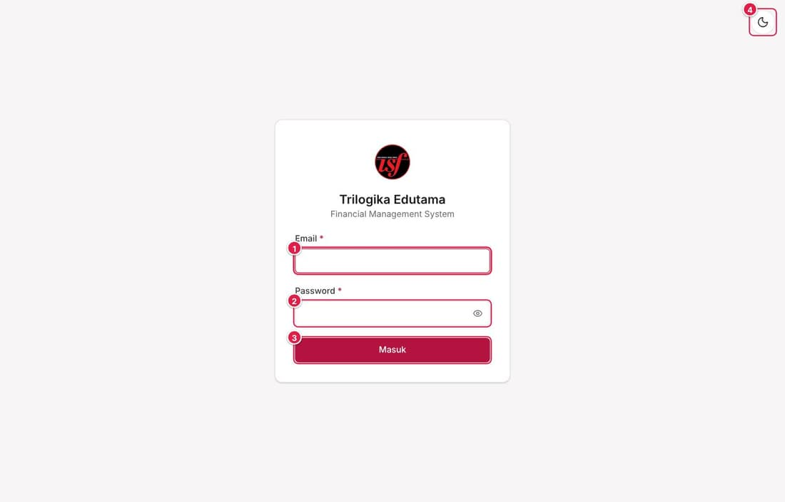
Alamat aplikasi dibuka di peramban (Chrome/Edge/Safari). Tombol bulan/matahari di kanan atas mengganti tema terang/gelap.
- 1Email akun Anda (diberikan Administrator).
- 2Password. Ikon mata di ujung kanan menampilkan/menyembunyikan isian.
- 3Klik Masuk. Setelah 5 kali salah, akun dikunci sementara 15 menit.
- 4Ganti tema terang/gelap (pilihan diingat di perangkat ini).
1.2 Mengganti password pertama kali
Akun baru memakai password sementara. Aplikasi memaksa Anda menggantinya sebelum dapat dipakai.
Aturan password baru: minimal 12 karakter, bukan password umum, dan tidak memuat nama atau email Anda. Setelah disimpan, sesi Anda di perangkat lain otomatis berakhir.
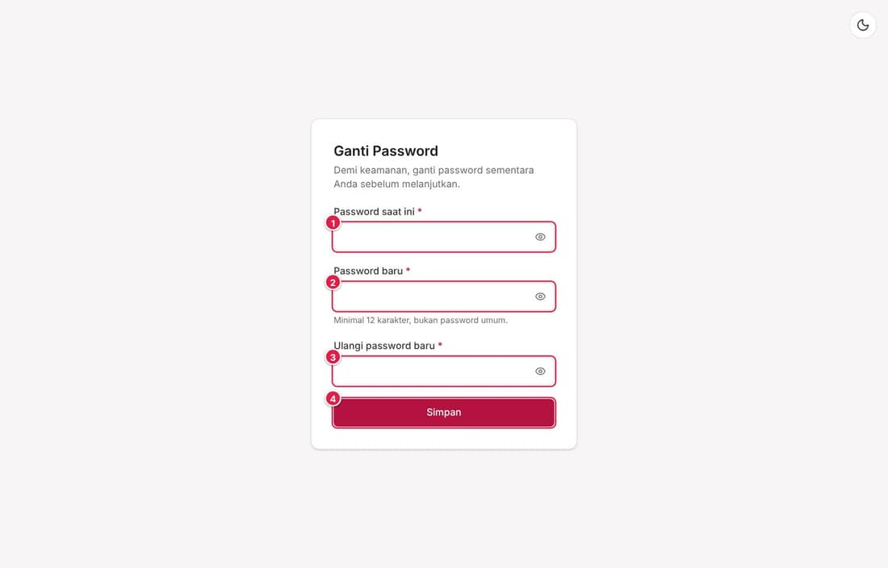
Akun baru memakai password sementara dari Administrator. Aplikasi memaksa Anda menggantinya sebelum bisa dipakai.
- 1Isi password sementara dari Administrator.
- 2Password baru: minimal 12 karakter, bukan password umum, tidak memuat nama/email Anda.
- 3Ketik ulang password baru yang sama.
- 4Simpan. Sesi Anda di perangkat lain otomatis berakhir.
Anda dapat mengganti password kapan saja lewat menu pengguna (pojok kanan atas).
1.3 Mengenal kerangka aplikasi
Semua halaman memiliki kerangka yang sama. Menu yang tampil mengikuti peran Anda; menu yang tidak ada berarti bukan wewenang peran Anda.
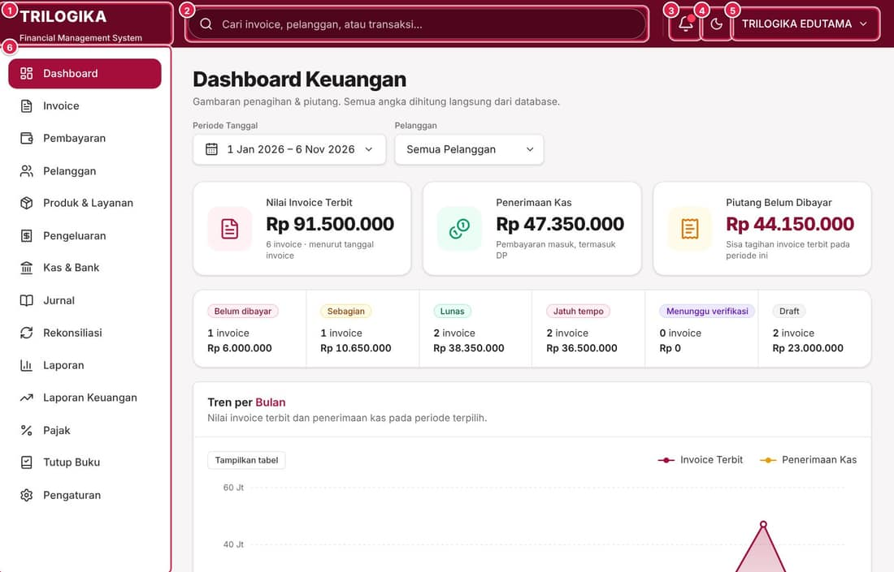
Semua halaman memakai kerangka yang sama. Menu yang tampil mengikuti peran Anda.
- 1Merek & nama aplikasi (klik untuk ke halaman awal).
- 2Pencarian global: invoice, pelanggan, pembayaran, entri kas.
- 3Lonceng: daftar pekerjaan yang menunggu Anda. Titik merah = ada yang perlu ditindak.
- 4Tema terang/gelap.
- 5Menu pengguna: identitas, ganti password, Keamanan (2FA), Keluar.
- 6Menu utama (sidebar). Item yang tidak tampil berarti tidak termasuk wewenang peran Anda.
Lonceng notifikasi
Berisi antrean pekerjaan sesuai peran, misalnya invoice menunggu verifikasi (Finance Manager) atau invoice dikembalikan dan invoice jatuh tempo. Klik butirnya untuk langsung membuka daftar yang sudah terfilter. Titik merah artinya ada yang perlu ditindak.
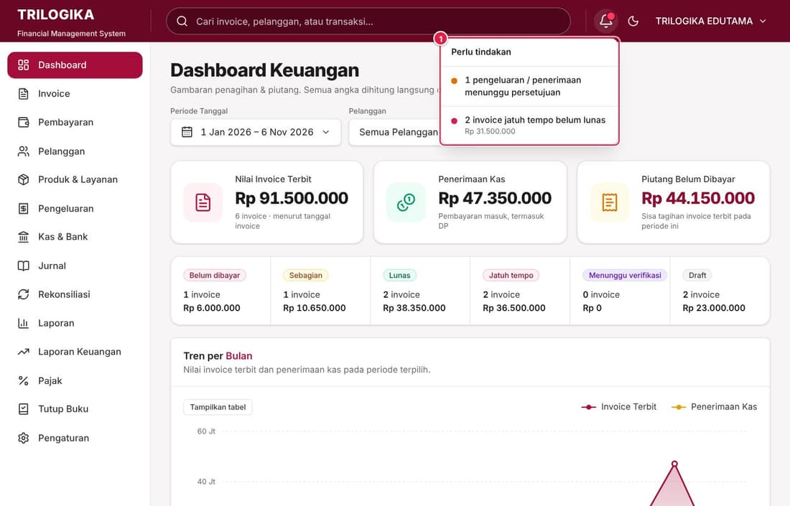
Berisi antrean pekerjaan sesuai peran (mis. invoice menunggu verifikasi, pengeluaran menunggu persetujuan, invoice jatuh tempo). Klik butir untuk langsung ke daftar yang sudah terfilter.
- 1Setiap baris = satu jenis pekerjaan beserta jumlahnya; klik untuk membukanya.
Menu pengguna
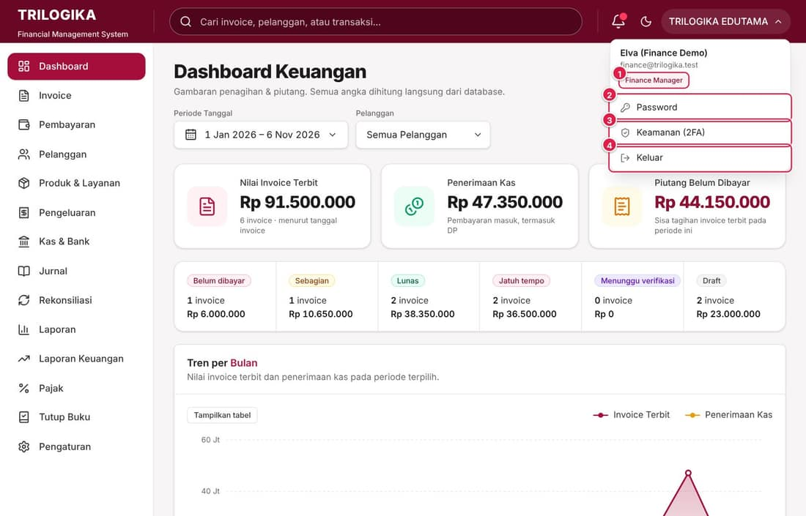
Dibuka dengan mengklik nama lembaga di kanan atas.
- 1Nama, email, dan peran Anda.
- 2Ganti password kapan saja.
- 3Aktifkan/kelola autentikasi dua langkah.
- 4Keluar dari aplikasi (selalu lakukan di komputer bersama).
Pencarian global
Ketik minimal 2 karakter lalu tekan Enter. Hasil dikelompokkan per jenis dan hanya memuat data yang boleh Anda lihat.
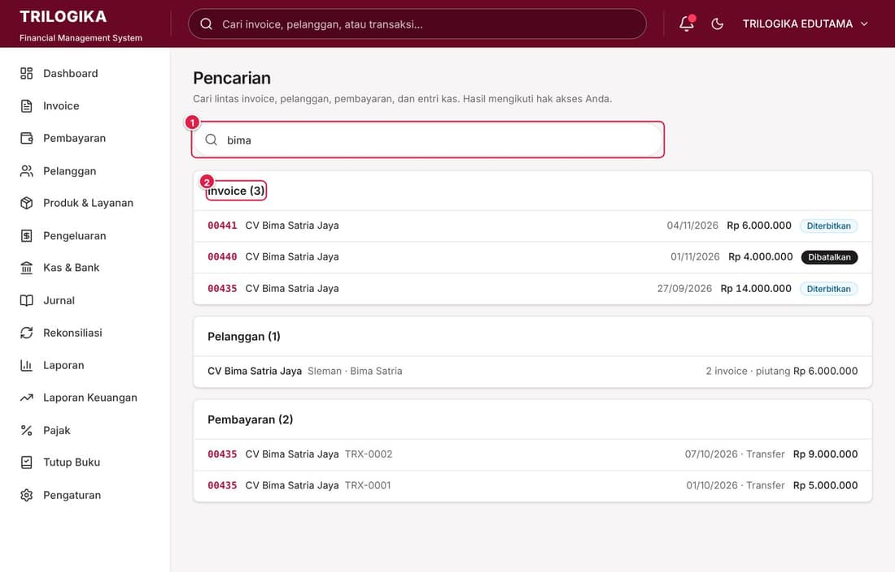
Ketik minimal 2 karakter di kotak cari (atas) lalu tekan Enter. Hasil dikelompokkan per jenis dan hanya menampilkan yang boleh Anda lihat.
- 1Kata kunci: nomor invoice, nama pelanggan, referensi transfer, keterangan kas.
- 2Tiap bagian menunjukkan jumlah hasil; klik baris untuk membuka dokumennya.
Tema terang/gelap
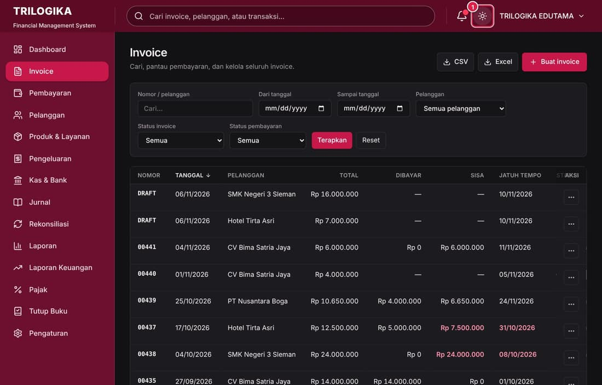
Nyaman untuk bekerja malam hari. Pilihan tema tersimpan di perangkat Anda dan tidak memengaruhi PDF/Excel.
- 1Klik lagi untuk kembali ke tema terang.
Di ponsel
Aplikasi menyesuaikan layar kecil. Menu utama dibuka dari tombol tiga garis.
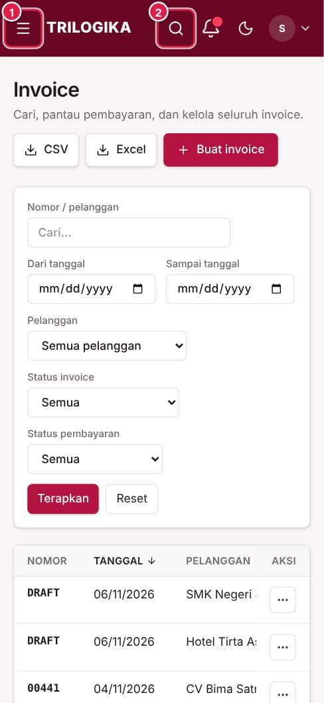
Aplikasi menyesuaikan layar kecil. Menu utama berada di tombol tiga garis.
- 1Buka menu utama.
- 2Pencarian.
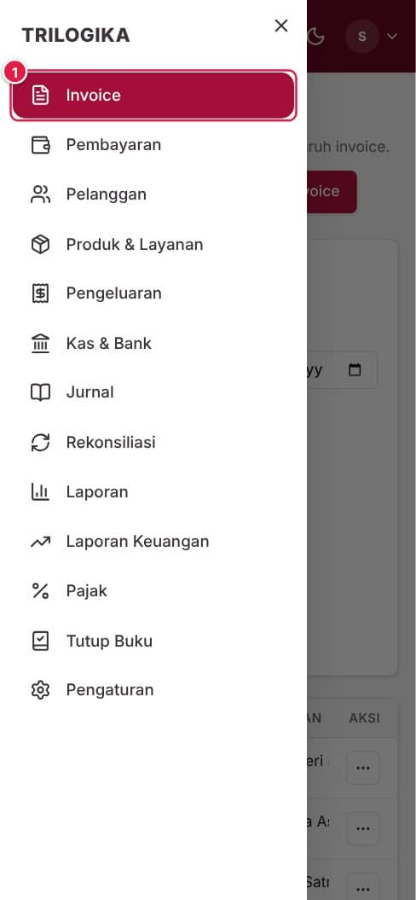
Pilih halaman dari laci menu; tutup dengan tanda silang atau mengetuk area gelap.
- 1Ketuk untuk berpindah halaman.
1.4 Autentikasi dua langkah (2FA)
2FA menambah lapisan keamanan: selain password, Anda memasukkan kode 6 digit dari aplikasi autentikator di ponsel (Google Authenticator, Microsoft Authenticator, Aegis, dsb.). Finance Manager dan Administrator wajib mengaktifkannya; mereka diarahkan ke halaman ini saat pertama masuk. Pelaksana boleh mengaktifkan secara sukarela.
Mengaktifkan 2FA
- Menu pengguna → Keamanan (2FA), klik Mulai mengaktifkan.
- Masukkan password Anda.
- Pindai kode QR dengan aplikasi autentikator (atau ketik kunci manual), lalu masukkan 6 digit yang tampil.
- Simpan 10 kode pemulihan. Kode hanya ditampilkan sekali.
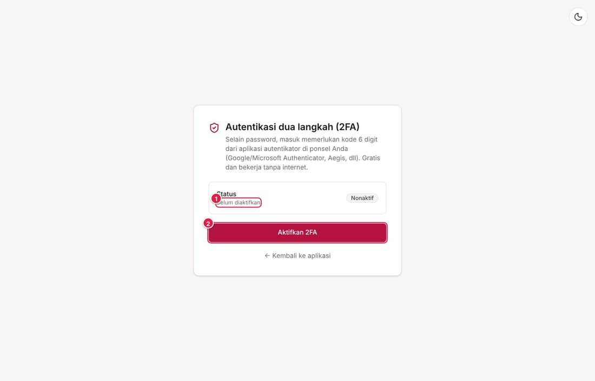
Dibuka dari menu pengguna → Keamanan (2FA). Peran yang diwajibkan (mis. Finance Manager & Administrator) akan diarahkan ke sini saat pertama masuk.
- 1Status saat ini.
- 2Mulai mengaktifkan.
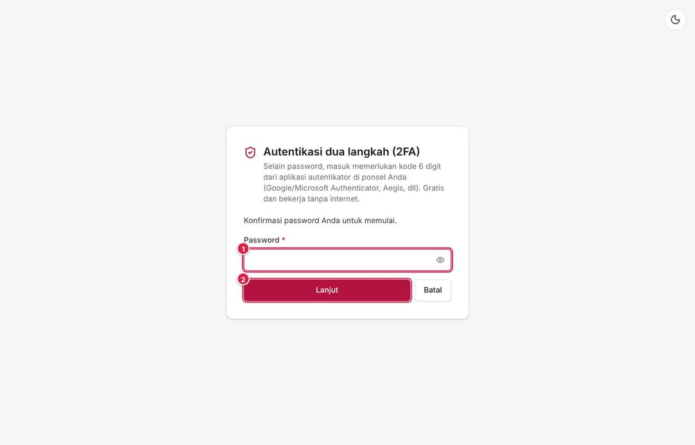
Demi keamanan, aplikasi meminta password lagi sebelum membuat kunci 2FA.
- 1Masukkan password akun Anda.
- 2Lanjut ke kode QR.
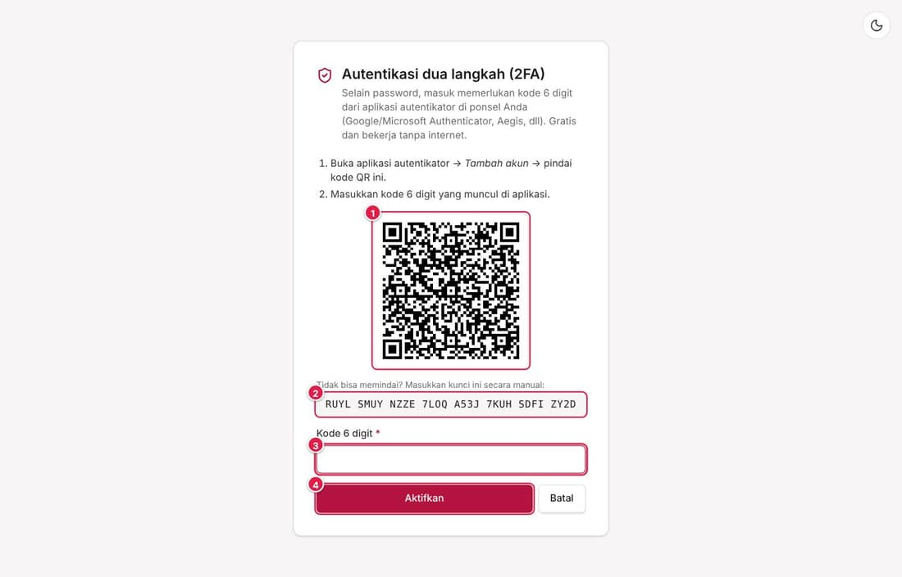
Buka aplikasi autentikator di ponsel (Google Authenticator, Microsoft Authenticator, Aegis, dll.) → tambah akun → pindai kode ini.
- 1Kode QR untuk dipindai aplikasi autentikator.
- 2Tidak bisa memindai? Ketik kunci ini secara manual di aplikasi.
- 3Masukkan 6 digit yang tampil di aplikasi (berganti tiap 30 detik).
- 4Aktifkan 2FA.
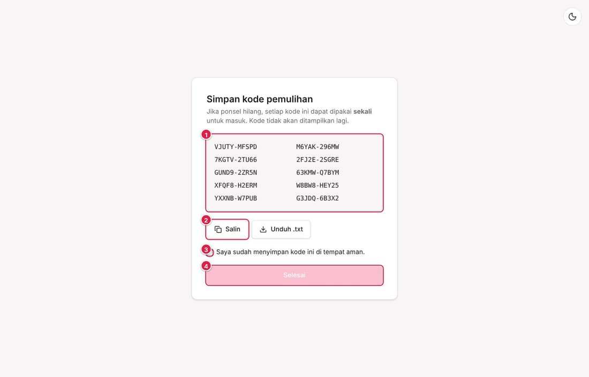
10 kode sekali pakai untuk masuk bila ponsel hilang/rusak. Ditampilkan SEKALI saja.
- 1Sepuluh kode pemulihan. Setiap kode hanya berlaku sekali.
- 2Salin ke papan klip, atau Unduh .txt.
- 3Centang setelah kode tersimpan di tempat aman (brankas/pengelola password — bukan di ponsel yang sama).
- 4Selesai (baru aktif setelah dicentang).
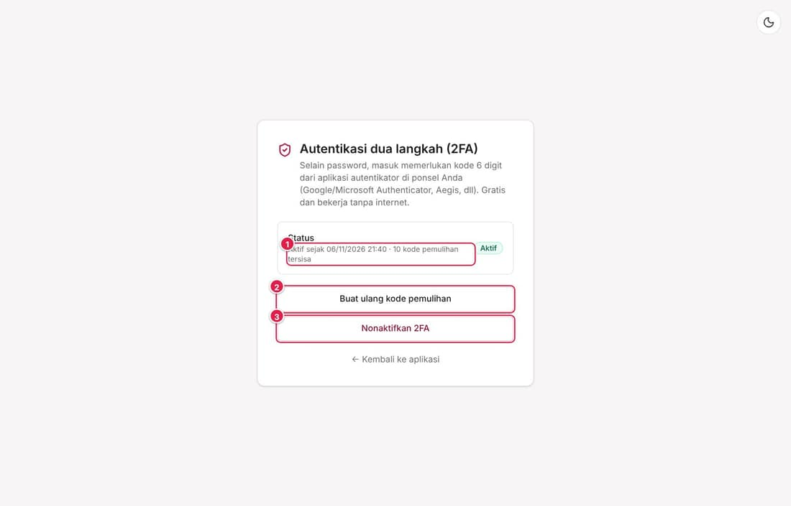
Status memuat tanggal aktif dan sisa kode pemulihan.
- 1Status, tanggal aktif, dan sisa kode pemulihan.
- 2Buat 10 kode baru (yang lama hangus) — lakukan bila kode hampir habis.
- 3Mematikan 2FA (tidak tersedia untuk peran yang diwajibkan).
Masuk dengan 2FA
Setelah password benar, masukkan kode 6 digit dari autentikator atau salah satu kode pemulihan (format XXXXX-XXXXX; tiap kode hanya sekali pakai).
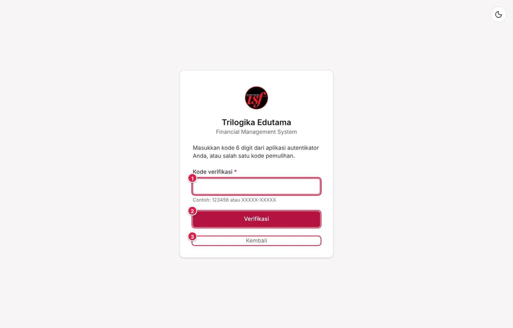
Setelah password benar, aplikasi meminta kode dari aplikasi autentikator. Tanpa kode, tidak ada sesi yang dibuat.
- 1Kode 6 digit dari aplikasi autentikator, ATAU salah satu kode pemulihan (format XXXXX-XXXXX).
- 2Verifikasi untuk masuk.
- 3Kembali ke langkah 1 (mis. salah akun).
Kode pemulihan habis atau menonaktifkan 2FA
Tindakan sensitif meminta password dan satu kode. Buat ulang kode pemulihan bila hampir habis (kode lama hangus). Peran yang diwajibkan tidak dapat mematikan 2FA.
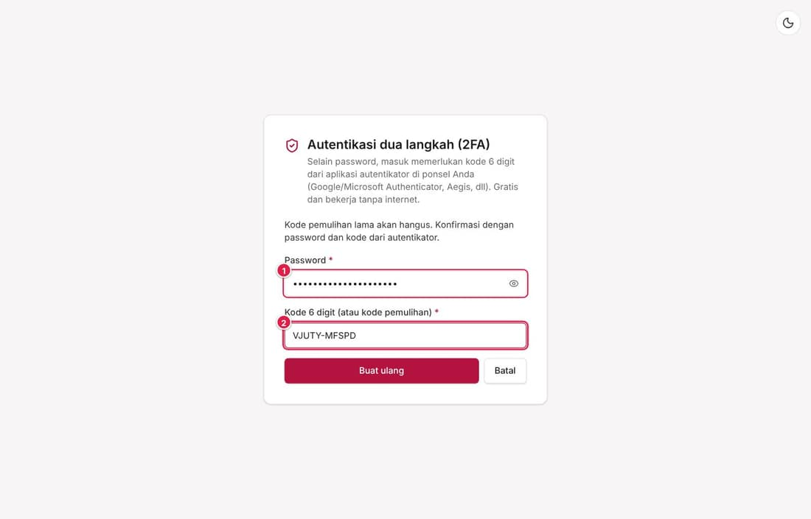
Tindakan sensitif selalu meminta password dan satu kode (dari autentikator atau salah satu kode pemulihan).
- 1Password akun.
- 2Kode autentikator atau kode pemulihan.
Ponsel hilang? Masuk dengan kode pemulihan, lalu daftarkan ponsel baru. Bila kode pun hilang, hubungi Administrator untuk mereset 2FA Anda.
Tips & Kesalahan Umum
- Jangan menyimpan kode pemulihan di ponsel yang sama dengan autentikator; pakai brankas/pengelola password.
- Selalu Keluar bila memakai komputer bersama.
- Jam ponsel harus akurat; kode 6 digit bergantung pada waktu.
Bab 2 — Dashboard Keuangan
Peran: Finance Manager ✔ · Pelaksana ✘ (menu tidak tersedia)
Dashboard memberi gambaran cepat kondisi penagihan. Semua angka dihitung langsung dari database, bukan input manual, sehingga selalu sama dengan daftar dan laporan.
2.1 Membaca dashboard
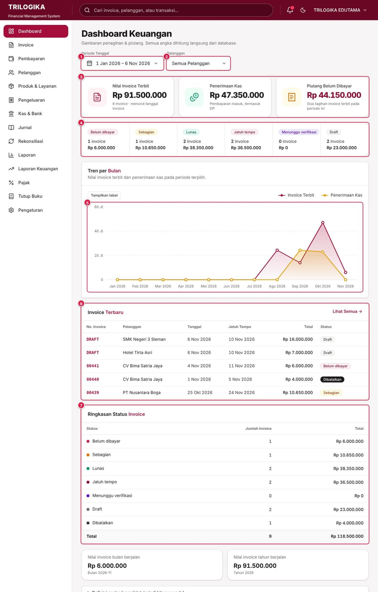
Hanya Finance Manager (dan Administrator) yang melihat dashboard. Semua angka dihitung langsung dari database, bukan input manual.
- 1Periode tanggal yang dianalisis (bawaan: 1 Januari s.d. hari ini).
- 2Saring seluruh angka untuk satu pelanggan.
- 3Tiga angka utama: Nilai Invoice Terbit, Penerimaan Kas, dan Piutang Belum Dibayar. Klik kartu untuk melihat rinciannya.
- 4Enam status invoice yang SALING LEPAS (satu invoice hanya masuk satu status). Klik untuk membuka daftar yang cocok.
- 5Tren per bulan: Invoice Terbit (merah) dan Penerimaan Kas (kuning). Arahkan kursor ke titik untuk melihat nilai.
- 6Lima invoice terbaru pada periode; klik nomor untuk membuka.
- 7Jumlah & nilai per status (termasuk Dibatalkan). Baris Total = seluruh invoice pada periode.
Cara memahami angka:
- Nilai Invoice Terbit = total nilai invoice yang diterbitkan pada periode (penerbitan, bukan uang masuk).
- Penerimaan Kas = uang yang benar-benar diterima pada periode (menurut tanggal pembayaran, dikurangi pembalikan).
- Piutang Belum Dibayar = sisa tagihan invoice terbit per hari ini.
- Enam status invoice saling lepas: satu invoice hanya masuk ke satu status, sehingga jumlahnya cocok dengan Total.
- Angka Nilai Invoice dan Penerimaan Kas tidak boleh dijumlahkan.
2.2 Memilih periode
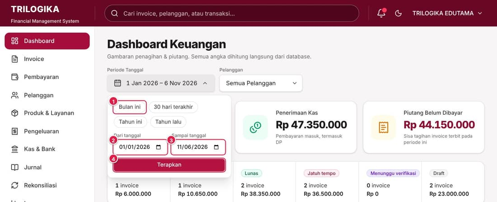
Klik tombol periode. Pilih rentang cepat atau isi tanggal sendiri.
- 1Rentang cepat: Bulan ini, 30 hari terakhir, Tahun ini, Tahun lalu.
- 2Tanggal awal.
- 3Tanggal akhir (tidak boleh di masa depan).
- 4Terapkan. Tombol nonaktif bila tanggal tidak valid.
Tombol Terapkan nonaktif bila tanggal tidak valid (tanggal akhir tidak boleh di masa depan atau sebelum tanggal awal).
2.3 Grafik dalam bentuk tabel
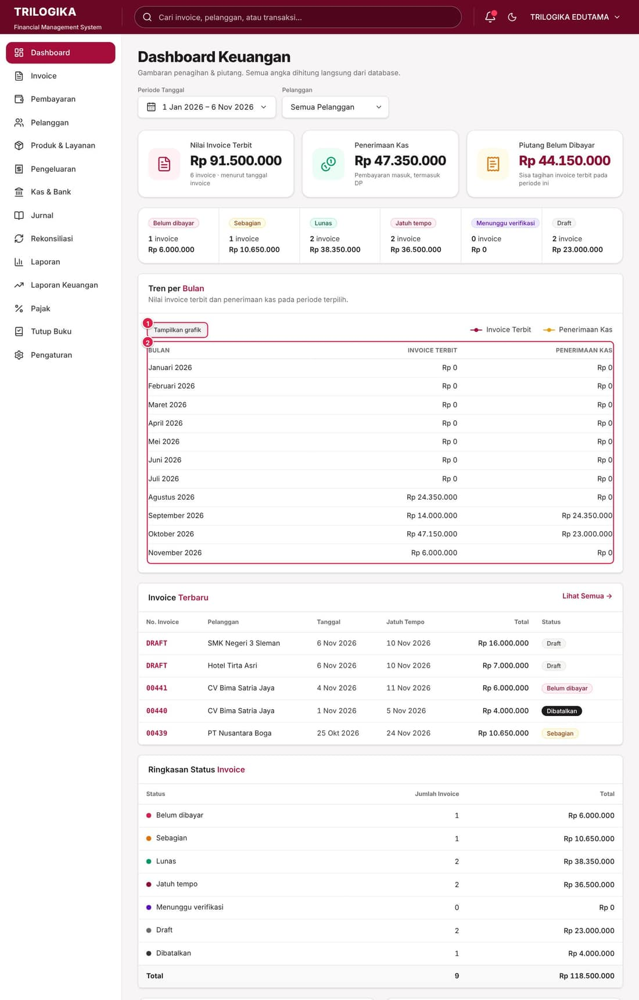
Tombol “Tampilkan tabel” mengganti grafik dengan tabel angka (berguna untuk dicetak atau dibaca pembaca layar).
- 1Kembali ke grafik.
- 2Nilai invoice terbit dan penerimaan kas tiap bulan.
2.4 Dashboard untuk satu pelanggan
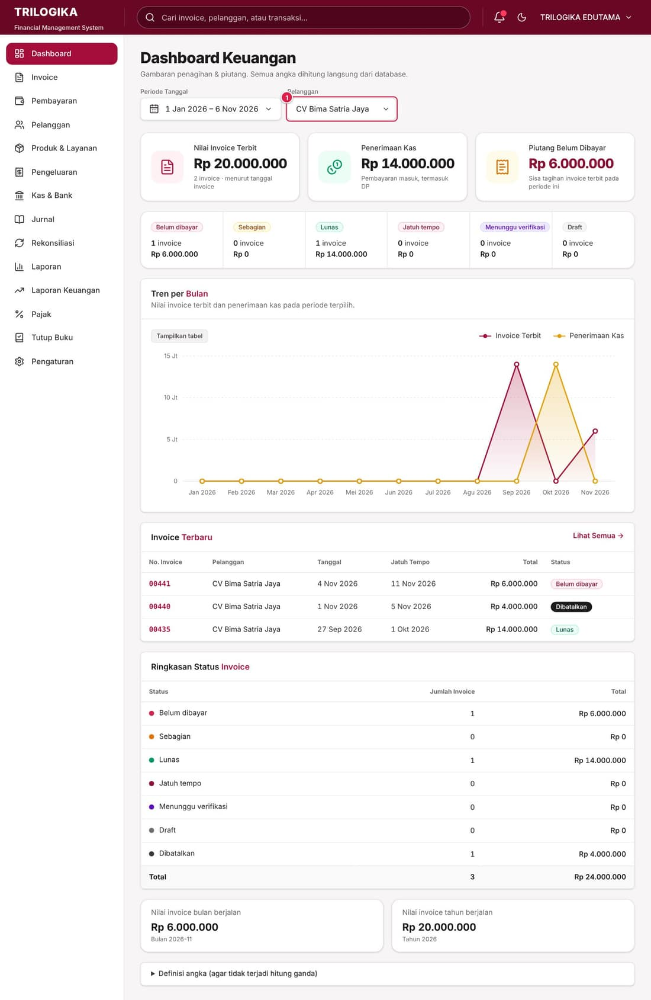
Setelah memilih pelanggan, semua kartu, status, grafik, dan tabel hanya memuat data pelanggan itu.
- 1Pelanggan terpilih (kembalikan ke “Semua Pelanggan” untuk melihat keseluruhan).
Tips
- Klik kartu atau status untuk membuka daftar invoice yang terfilter sesuai definisi yang sama.
- Cek dashboard dan lonceng setiap pagi sebagai titik awal pekerjaan harian.
Bab 3 — Pelanggan
Peran: Pelaksana ✔ · Finance Manager ✔ (lihat, tambah, ubah, arsipkan)
3.1 Daftar pelanggan
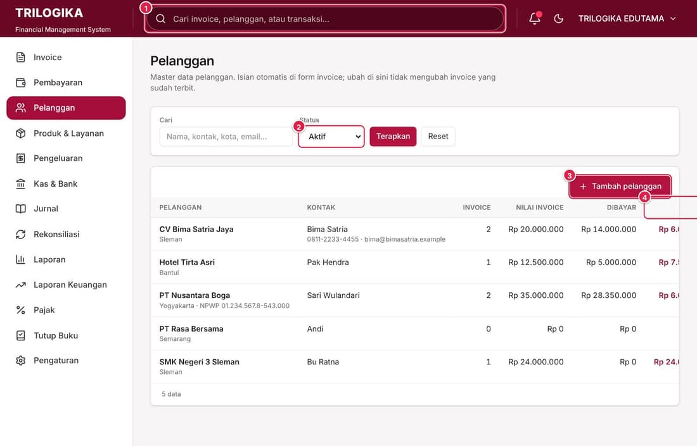
Menu Pelanggan. Pelaksana dan Finance Manager dapat menambah, mengubah, dan mengarsipkan pelanggan.
- 1Cari nama, kontak, kota, atau email.
- 2Tampilkan pelanggan Aktif, Diarsipkan, atau Semua.
- 3Tambah pelanggan baru.
- 4Piutang = nilai invoice terbit dikurangi pembayaran yang tercatat.
- 5Edit data pelanggan; Arsipkan menyembunyikan pelanggan dari pilihan invoice baru (riwayat tetap).
Piutang per pelanggan = nilai invoice terbit dikurangi pembayaran yang tercatat.
3.2 Menambah pelanggan
- Klik Tambah pelanggan.
- Isi Nama (wajib) persis seperti yang akan tercetak di invoice. Lengkapi kontak, kota, email, dan NPWP bila ada.
- Klik Simpan.
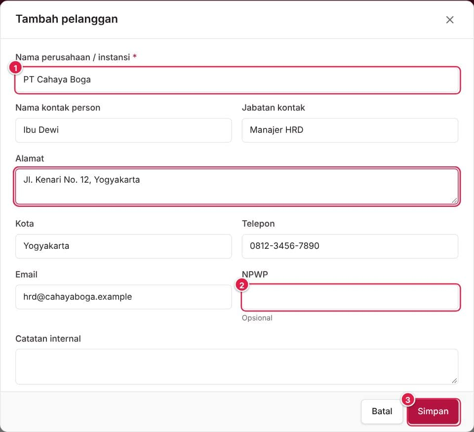
Hanya nama yang wajib; makin lengkap data kontak, makin rapi invoice dan penagihan.
- 1Nama perusahaan/instansi persis seperti yang akan tercetak di invoice.
- 2NPWP (opsional) — dicetak bila diisi.
- 3Simpan. Aplikasi memeriksa kemungkinan duplikat lebih dulu.
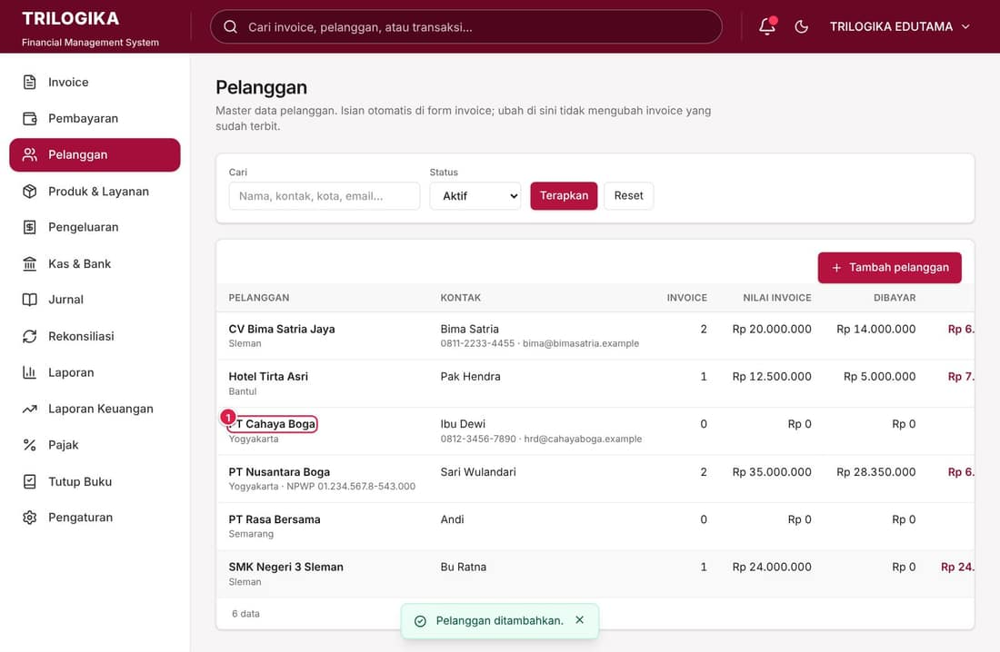
Muncul notifikasi hijau dan pelanggan baru langsung ada di daftar serta di pilihan invoice.
- 1Pelanggan baru.
Pencegahan duplikat
Sistem mencegah pelanggan ganda karena salah ketik.
- Nama dan kota sama persis → penyimpanan ditolak dan pelanggan yang cocok ditampilkan. Pakai yang sudah ada.
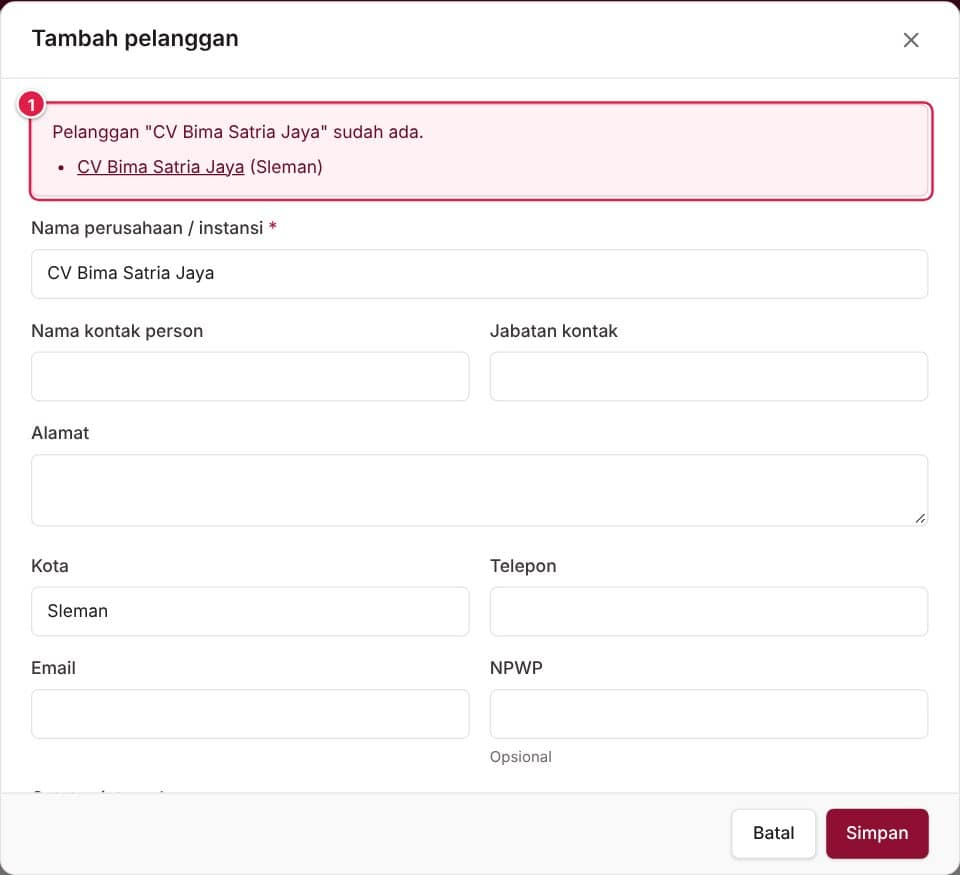
Bila nama dan kota sama persis dengan pelanggan yang sudah ada, penyimpanan ditolak dan pelanggan yang cocok ditampilkan. Pakai pelanggan itu, jangan buat ganda.
- 1Pesan penolakan beserta pelanggan yang cocok (nama dan kotanya).
- Nama sama, kota berbeda → diminta konfirmasi. Pilih lanjut hanya bila memang entitas berbeda (misalnya cabang lain).
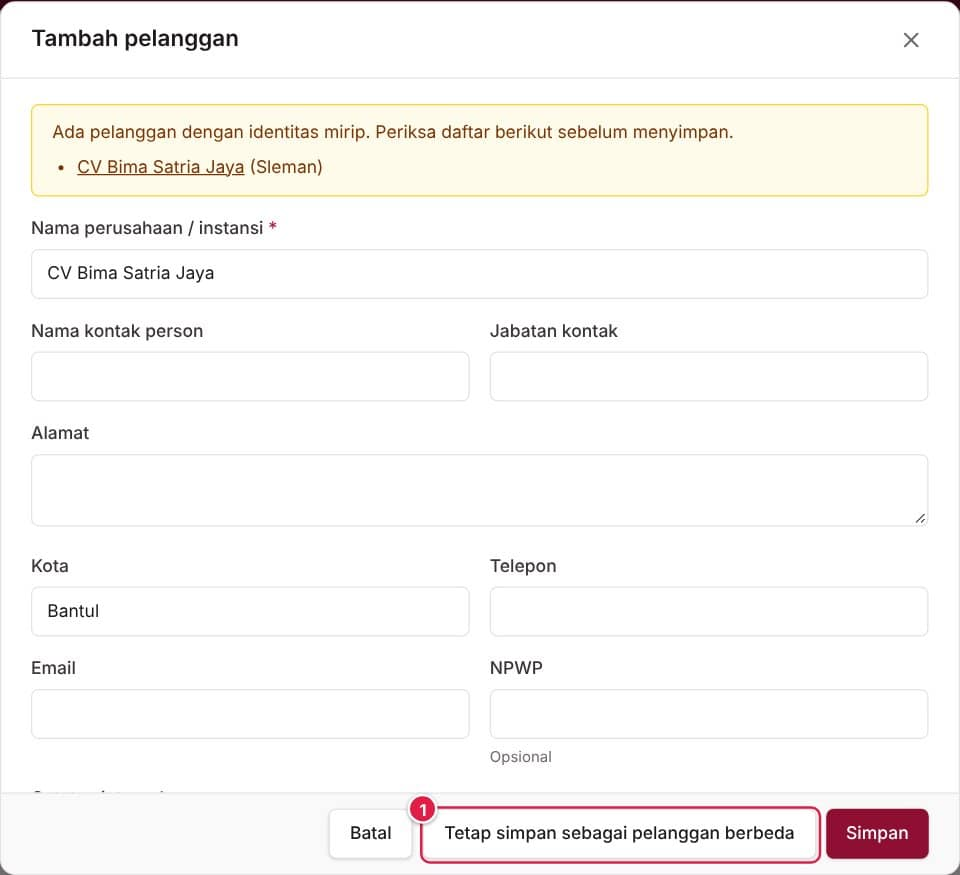
Bila nama sama tetapi kota berbeda, aplikasi meminta konfirmasi. Ini mencegah catatan ganda karena salah ketik, tetapi tetap mengizinkan cabang/pelanggan yang memang berbeda.
- 1Pilih ini HANYA bila memang pelanggan yang berbeda (mis. cabang lain). Jika sama, tekan Batal dan pakai pelanggan yang sudah ada.
3.3 Detail pelanggan
Klik nama pelanggan untuk melihat data kontak, ringkasan piutang, dan seluruh riwayat invoice.
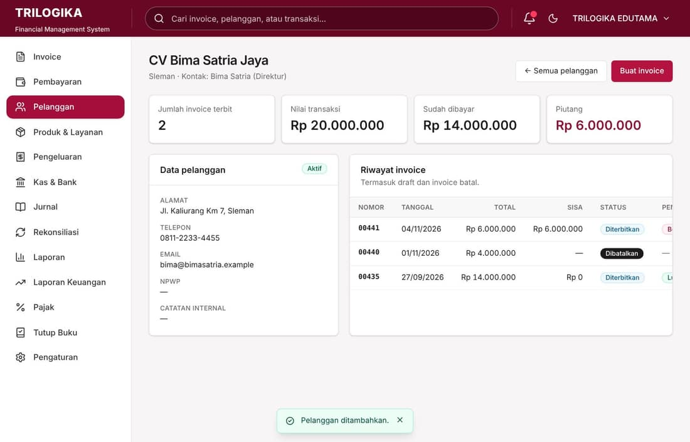
Klik nama pelanggan di daftar. Menampilkan data kontak, ringkasan piutang, dan seluruh riwayat invoice pelanggan itu.
3.4 Mengubah pelanggan
Perubahan data pelanggan tidak mengubah invoice yang sudah terbit (nama pada invoice terbit adalah salinan beku).
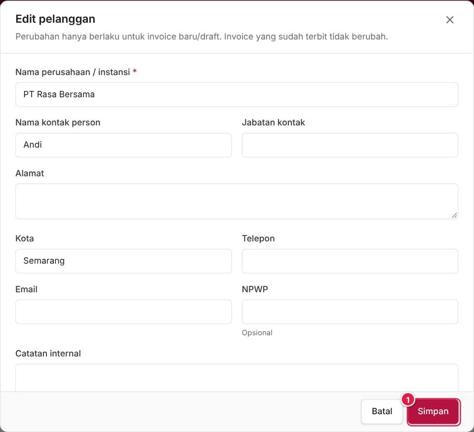
Perubahan data pelanggan tidak mengubah invoice yang sudah terbit (nama pada invoice terbit adalah salinan beku).
- 1Simpan perubahan.
3.5 Mengarsipkan pelanggan
Pelanggan yang tidak aktif diarsipkan, bukan dihapus: riwayatnya tetap utuh dan pelanggan tidak muncul di pilihan invoice baru. Untuk mengaktifkan kembali, filter Status → Diarsipkan lalu aktifkan.
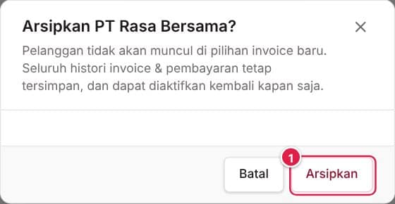
Pelanggan yang tidak aktif diarsipkan (bukan dihapus). Riwayatnya tetap utuh dan dapat diaktifkan kembali lewat filter Status → Diarsipkan.
- 1Konfirmasi pengarsipan.
Tips & Kesalahan Umum
- Cari dulu sebelum menambah; hindari duplikat.
- Tulis nama lembaga lengkap dan konsisten (mis. “PT Nusantara Boga”, bukan “Nusantara”).
- Ejaan nama menentukan tampilan di PDF invoice; periksa sebelum menyimpan.
Bab 4 — Produk & Layanan
Peran: Pelaksana ✔ lihat · Finance Manager ✔ lihat · Penambahan/perubahan: Administrator
Katalog yang dipilih saat membuat invoice. Memilih produk mengisi satuan, harga, deskripsi, dan pajak bawaan secara otomatis.
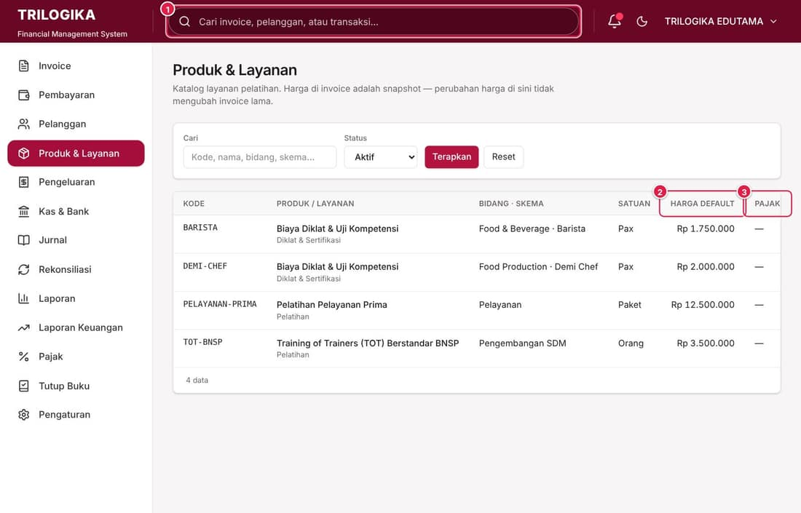
Katalog yang dipilih saat membuat invoice. Pelaksana dan Finance Manager dapat MELIHAT; penambahan/perubahan produk dilakukan Administrator.
- 1Cari kode atau nama produk.
- 2Harga default terisi otomatis di baris invoice (dapat diubah oleh yang berwenang).
- 3Pajak bawaan produk (non-PKP: umumnya “Tanpa pajak”).
Cara memakainya
- Cari produk berdasarkan kode atau nama untuk memastikan produk/skema yang benar.
- Saat membuat invoice, pilih produk pada baris; harga default terisi otomatis.
- Bila produk tidak ada atau harga katalog perlu diubah permanen, hubungi Administrator.
Tips
- Harga di baris invoice boleh disesuaikan oleh yang berwenang (Pelaksana dan Finance Manager), tetapi katalog tidak berubah.
- Lembaga ini non-PKP, sehingga pajak bawaan umumnya Tanpa pajak.
Bab 5 — Invoice
Peran: Pelaksana ✔ buat, ubah draft, ajukan, tarik kembali, duplikasi, hapus draft, lihat PDF · Finance Manager ✔ + terbitkan, kembalikan, batalkan
5.1 Alur hidup sebuah invoice
Draft ──(Pelaksana ajukan)──► Menunggu Verifikasi ──(Finance Manager setujui)──► Diterbitkan ──► (dibayar bertahap) ──► Lunas
▲ │ │
└──(Finance Manager kembalikan)─────┘ └──(Finance Manager batalkan)──► Dibatalkan
| Status | Artinya | Bisa diubah? |
|---|---|---|
| Draft | Belum bernomor, berwatermark DRAFT | Ya, oleh pembuatnya |
| Menunggu Verifikasi | Diajukan, menunggu Finance Manager | Tidak (terkunci); dapat ditarik kembali |
| Diterbitkan | Bernomor resmi, bertanda tangan & cap | Tidak (dibekukan) |
| Dibatalkan | Dibatalkan beserta alasan; nomor tidak dipakai ulang | Tidak |
Status pembayaran terpisah dari status dokumen: Belum Dibayar → Dibayar Sebagian → Lunas, dan Jatuh Tempo bila melewati tanggal jatuh tempo dengan sisa tagihan.
5.2 Daftar invoice
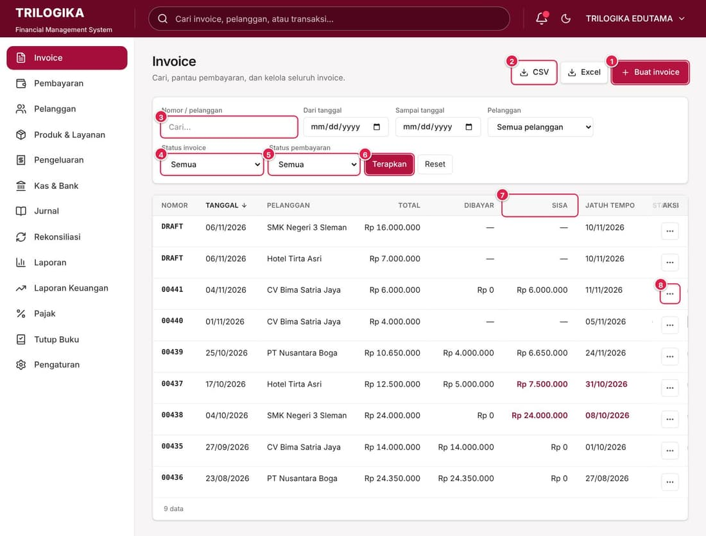
Menu Invoice. Pelaksana melihat seluruh invoice; Finance Manager juga.
- 1Membuat invoice baru.
- 2Ekspor daftar (sesuai filter) ke CSV atau Excel.
- 3Cari nomor invoice atau nama pelanggan.
- 4Saring menurut status dokumen: Draft, Menunggu verifikasi, Diterbitkan, Dibatalkan.
- 5Saring menurut pembayaran: Belum dibayar, Dibayar sebagian, Lunas, Jatuh tempo.
- 6Terapkan filter (Reset mengembalikan semua).
- 7Sisa = tagihan yang belum dibayar. Merah = sudah lewat jatuh tempo.
- 8Menu aksi per baris (Duplikasi, Hapus draft, Batalkan — sesuai status & peran).
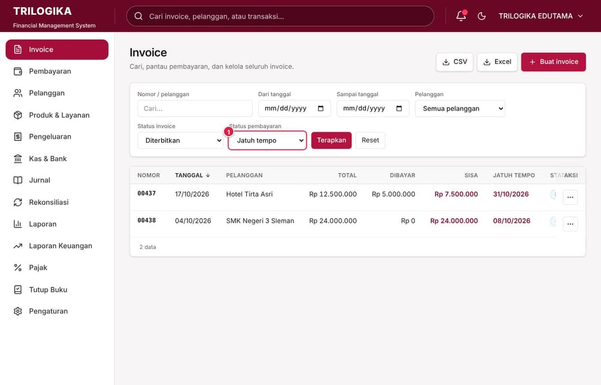
Kombinasi filter dapat dipakai untuk menyiapkan penagihan. Angka di dashboard dan lonceng memakai definisi yang sama.
- 1Filter aktif.
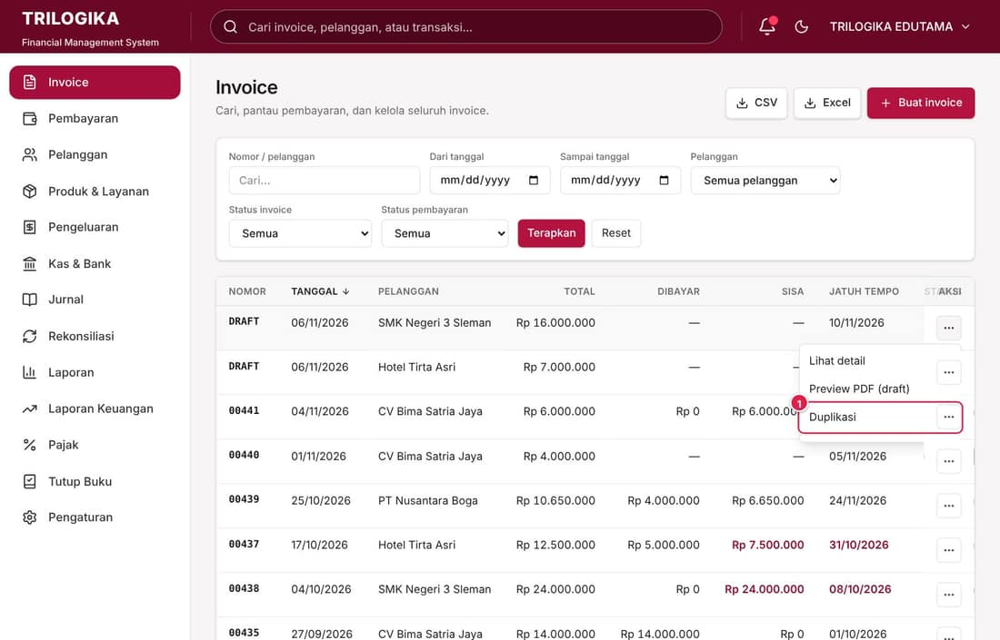
Pada draft: Duplikasi dan Hapus draft. Pada invoice terbit: Duplikasi (dan Batalkan invoice untuk Finance Manager).
- 1Salin invoice menjadi draft baru (tanpa nomor & pembayaran).
5.3 Membuat invoice (Pelaksana)
Klik Buat invoice. Formulir terdiri dari tiga bagian.
a. Informasi utama
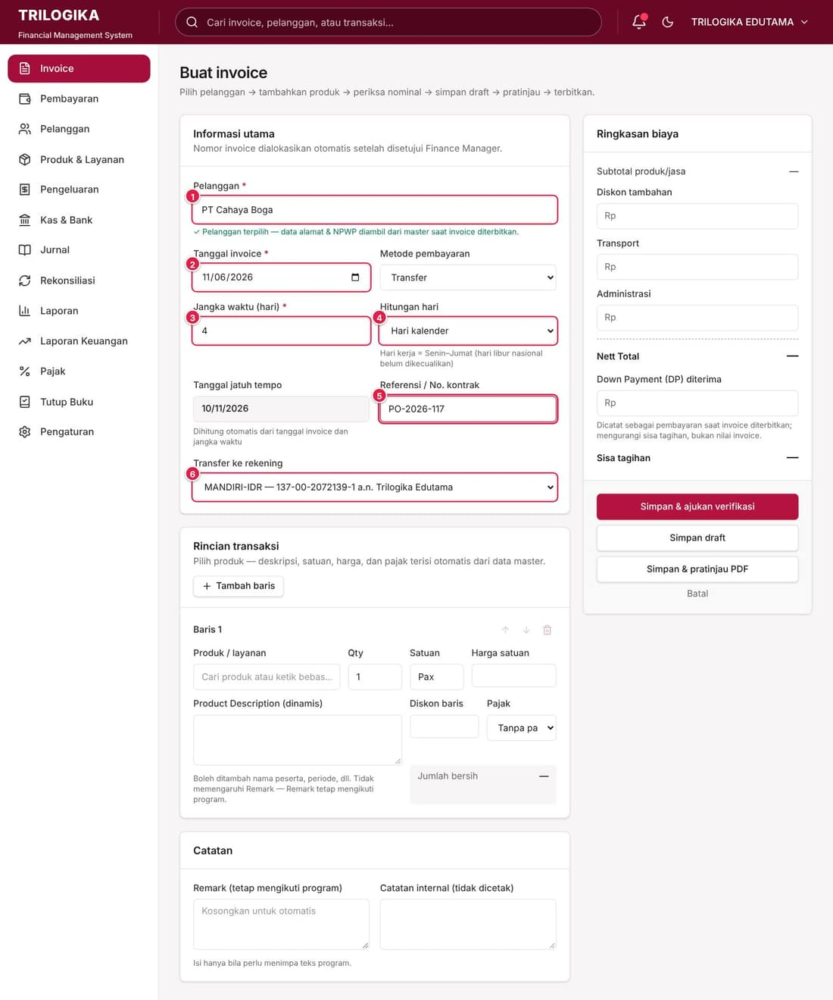
Buka Invoice → Buat invoice. Bagian atas berisi data dokumen.
- 1Pilih pelanggan: ketik sebagian nama lalu pilih dari daftar. Pelanggan baru dapat ditambahkan langsung dari sini.
- 2Tanggal invoice (bawaan hari ini).
- 3Jangka waktu pembayaran dalam hari. Tanggal jatuh tempo dihitung otomatis.
- 4Hari kalender atau hari kerja (Senin–Jumat).
- 5Nomor kontrak/PO pelanggan (opsional, tercetak di invoice).
- 6Rekening tujuan pembayaran yang tercetak di invoice.
b. Rincian transaksi
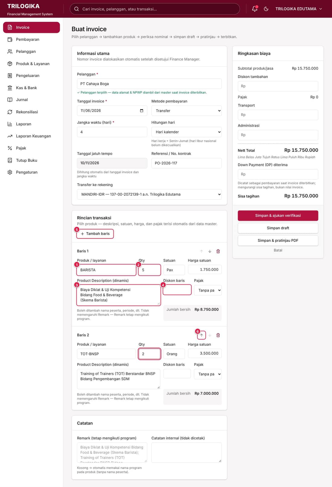
Setiap baris = satu produk/layanan. Memilih produk mengisi satuan, harga, dan deskripsi otomatis.
- 1Cari & pilih produk dari katalog.
- 2Jumlah (qty). Harga satuan terisi dari katalog.
- 3Deskripsi baris yang tercetak. Boleh ditambah (mis. nama peserta, periode); “Remark” program tetap mengikuti produk.
- 4Diskon per baris (Rupiah) — hanya bila diizinkan.
- 5Tambah baris produk lain.
- 6Ubah urutan baris atau hapus baris.
c. Ringkasan biaya
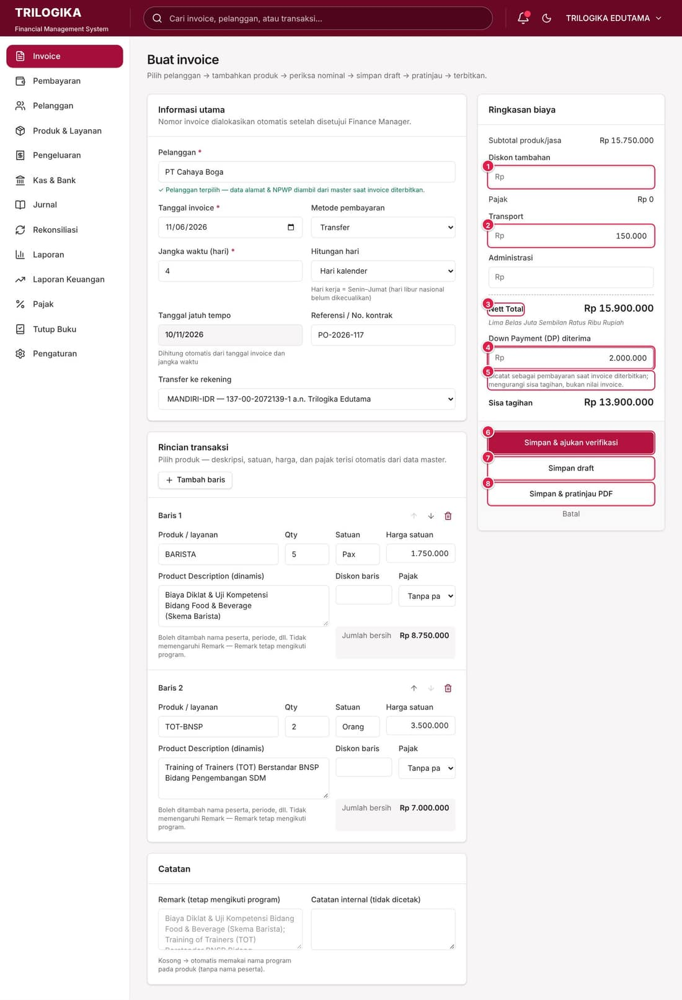
Panel kanan menghitung ulang setiap kali isian berubah. Angka akhir selalu dihitung ulang oleh server saat disimpan.
- 1Diskon tambahan atas seluruh invoice (bila berwenang).
- 2Biaya transport dan Administrasi (opsional).
- 3Nett Total = total invoice, lengkap dengan terbilang.
- 4DP yang sudah diterima: dicatat sebagai pembayaran pertama saat invoice terbit (tidak mengurangi nilai invoice).
- 5Sisa tagihan setelah DP.
- 6Simpan DAN langsung ajukan ke Finance Manager (jalan pintas bila sudah yakin).
- 7Simpan sebagai draft (belum bernomor) — bisa dilanjutkan nanti.
- 8Simpan lalu tampilkan PDF draft untuk diperiksa.
Validasi
Isian wajib yang kosong ditandai merah dengan pesan. Perbaiki lalu simpan lagi.
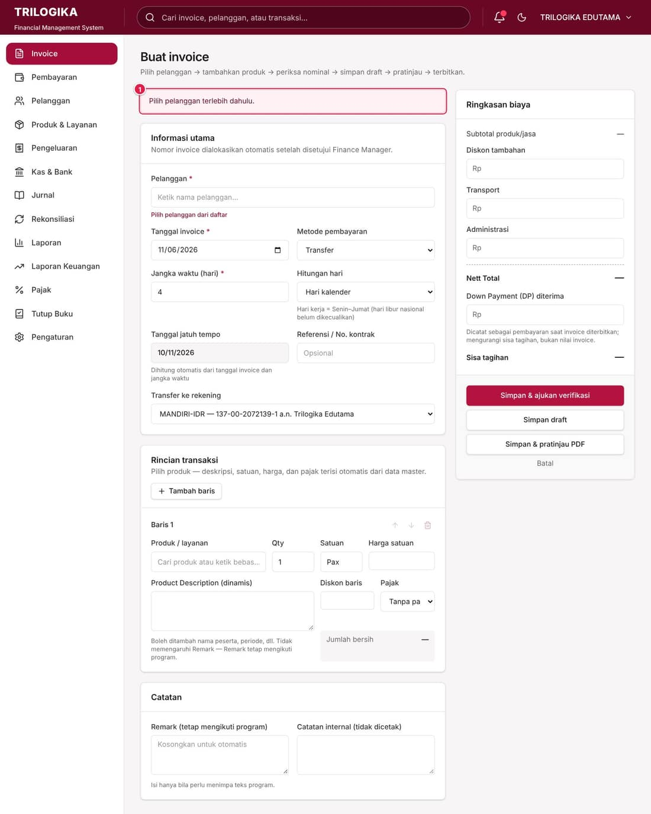
Isian wajib yang kosong ditandai merah dengan pesan. Perbaiki lalu simpan lagi.
- 1Pesan kesalahan / isian yang harus dilengkapi.
Tiga cara menyimpan
| Tombol | Hasil |
|---|---|
| Simpan sebagai draft | Draft tersimpan, dapat dilanjutkan nanti |
| Simpan & lihat PDF draft | Draft tersimpan, lalu pratinjau PDF berwatermark dibuka |
| Simpan & ajukan verifikasi | Draft tersimpan dan langsung dikirim ke Finance Manager |
5.4 Draft, pratinjau PDF, dan pengajuan
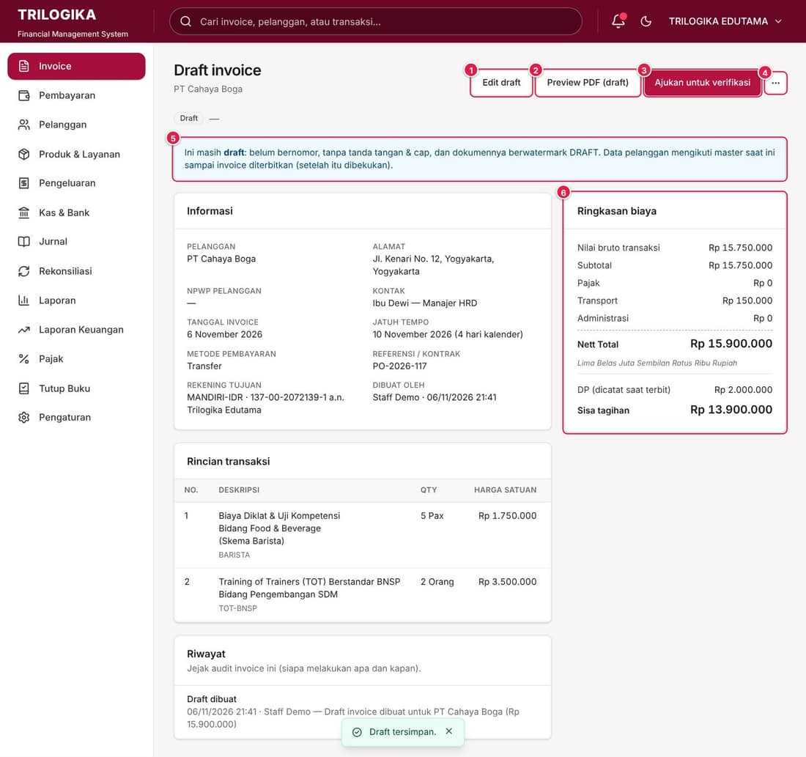
Draft belum bernomor dan berwatermark DRAFT. Isi masih dapat diubah oleh pembuatnya.
- 1Ubah isi draft (hanya selama masih draft dan hanya oleh pembuatnya).
- 2Pratinjau PDF draft (berwatermark).
- 3Kirim ke Finance Manager untuk diperiksa & diterbitkan.
- 4Menu: Duplikasi dan Hapus draft.
- 5Penanda status: belum bernomor, tanpa tanda tangan & cap.
- 6Ringkasan biaya dan sisa tagihan.
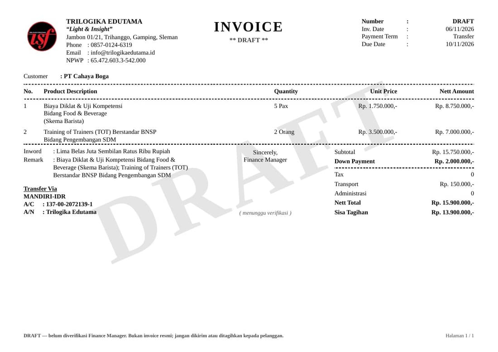
Pratinjau draft berwatermark DRAFT; tanda tangan dan cap baru muncul setelah disetujui.
Mengajukan untuk verifikasi
Setelah diajukan, isi invoice terkunci. Finance Manager menerima pemberitahuan di lonceng.
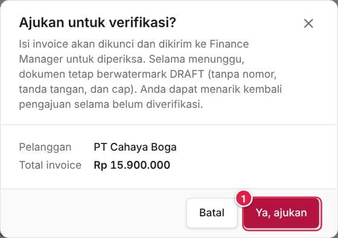
Setelah diajukan, isi invoice terkunci. Draft tetap berwatermark sampai Finance Manager menyetujui.
- 1Konfirmasi pengajuan.
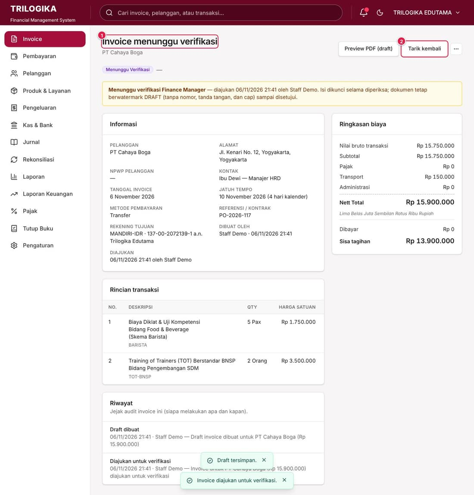
Status berubah menjadi “Menunggu Verifikasi”. Pelaksana tidak dapat mengubah isinya, tetapi masih boleh menarik kembali selama belum diperiksa.
- 1Status dokumen.
- 2Tarik kembali pengajuan (invoice kembali menjadi draft yang dapat diedit).
Menarik kembali pengajuan
Dipakai bila Anda menyadari kesalahan sebelum Finance Manager memeriksa. Invoice kembali menjadi draft yang bisa diedit.
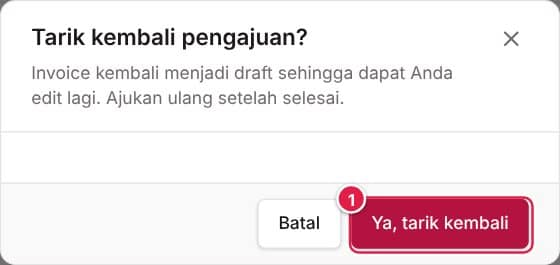
Dipakai bila ada kesalahan yang disadari sebelum Finance Manager memeriksa.
- 1Konfirmasi (di sini dibatalkan agar alur berlanjut).
5.5 Verifikasi dan penerbitan (Finance Manager)
Buka invoice dari lonceng atau filter Menunggu verifikasi. Periksa pelanggan, rincian, nominal, dan PDF.
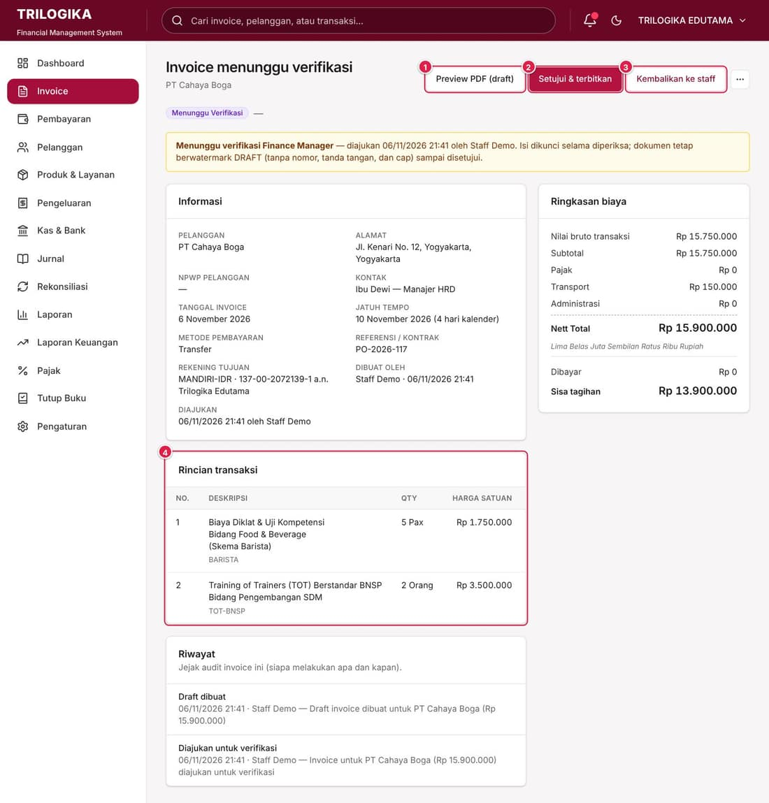
Finance Manager membuka invoice dari lonceng atau filter “Menunggu verifikasi”. Periksa pelanggan, rincian, nominal, dan PDF sebelum memutuskan.
- 1Periksa PDF (masih berwatermark DRAFT).
- 2Setujui & terbitkan: nomor dialokasikan, tanda tangan & cap muncul, isi dibekukan.
- 3Kembalikan ke pelaksana dengan catatan perbaikan.
- 4Rincian yang diperiksa.
Opsi 1 — Kembalikan ke Pelaksana
Tulis catatan perbaikan yang spesifik; catatan terlihat oleh Pelaksana.
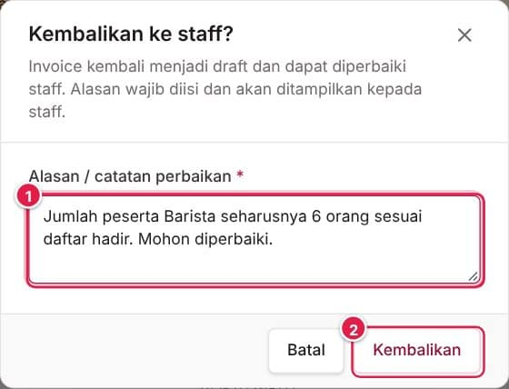
Alasan wajib diisi dan akan terlihat oleh pelaksana.
- 1Tulis perbaikan yang diminta secara spesifik.
- 2Kembalikan.
Pelaksana memperbaiki
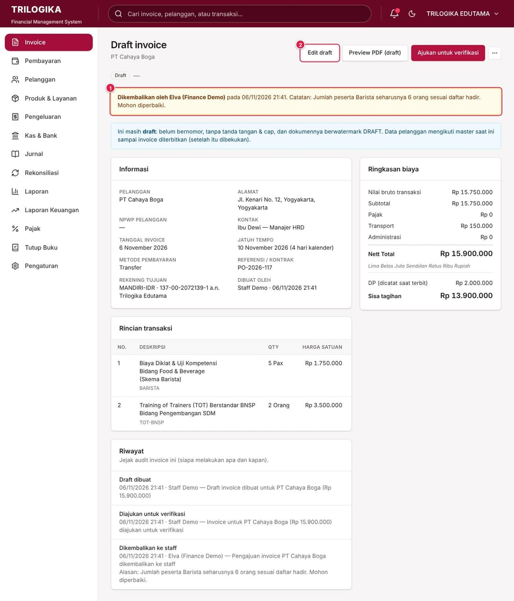
Pelaksana melihat catatan perbaikan pada halaman invoice (juga di riwayat). Draft dapat diedit lagi.
- 1Catatan dari Finance Manager.
- 2Perbaiki isi draft.
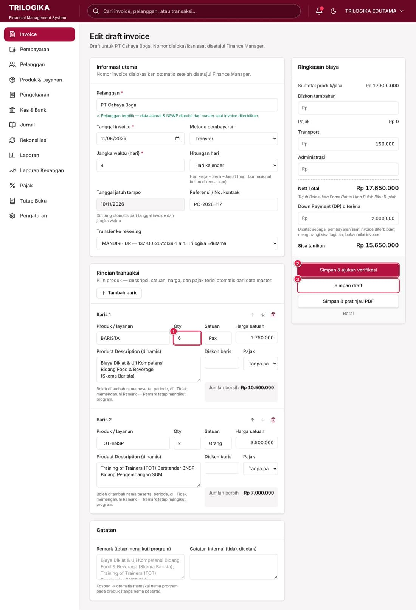
Formulir sama dengan saat membuat invoice, sudah terisi. Ubah yang perlu, lalu simpan.
- 1Contoh perbaikan: jumlah peserta menjadi 6.
- 2Simpan perbaikan sekaligus mengajukan ulang.
- 3Atau simpan saja tanpa mengajukan.
Opsi 2 — Setujui & terbitkan
Nomor dialokasikan (urut, tidak dipakai ulang), tanda tangan dan cap muncul, isi dibekukan. Bila ada DP yang diisi, DP dicatat sebagai pembayaran pertama.
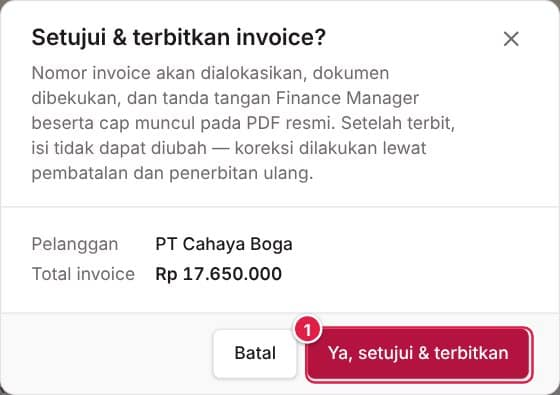
Tindakan ini tidak dapat dibatalkan dengan mudah: isi dibekukan, nomor terpakai. Koreksi setelah terbit dilakukan lewat pembatalan.
- 1Terbitkan.
5.6 Invoice terbit
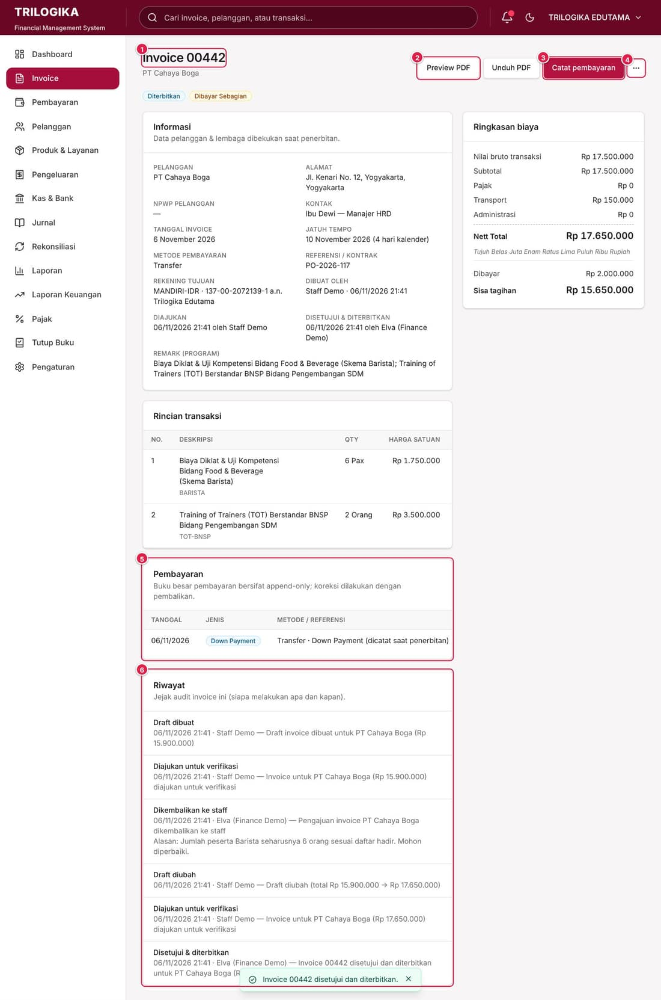
Setelah terbit invoice bernomor, pelanggan & rincian dibekukan, dan siap ditagih.
- 1Nomor invoice resmi (urut, tidak pernah dipakai ulang).
- 2Preview PDF resmi di layar; Unduh PDF menyimpan berkasnya.
- 3Mencatat pembayaran/DP dari pelanggan (lihat bab Pembayaran).
- 4Duplikasi atau Batalkan invoice (Finance Manager).
- 5Daftar pembayaran yang tercatat pada invoice ini.
- 6Riwayat: siapa membuat, mengajukan, mengembalikan, menyetujui — lengkap dengan waktunya.
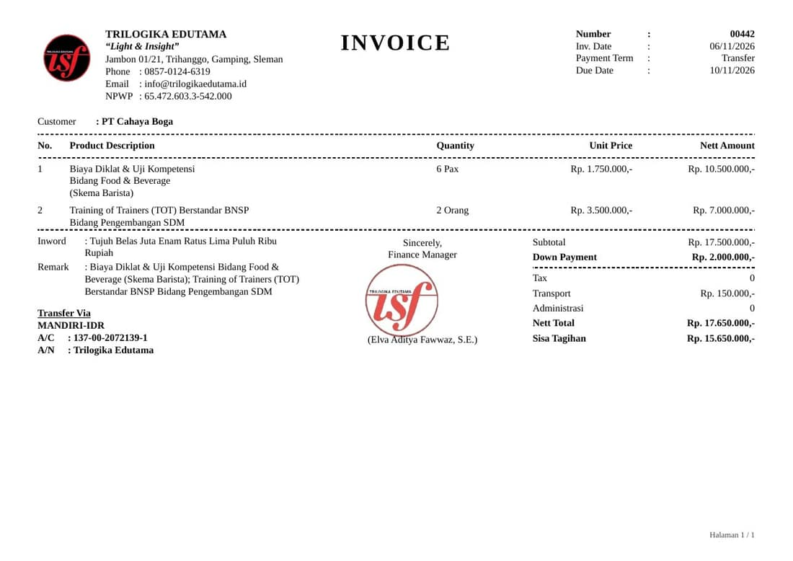
PDF resmi: bernomor, bertanda tangan Finance Manager dan bercap. Bandingkan dengan draft di atas.
5.7 Membatalkan invoice terbit (Finance Manager)
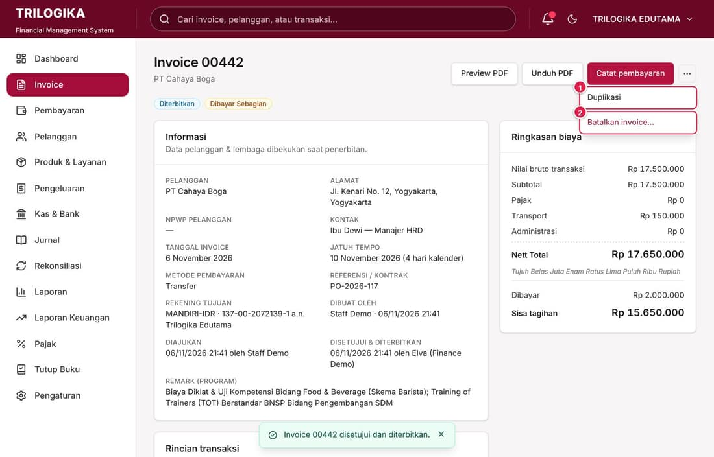
Hanya Finance Manager yang dapat membatalkan invoice terbit.
- 1Salin menjadi draft baru.
- 2Batalkan invoice (alasan wajib).
Alasan wajib. Bila sudah ada pembayaran, balikkan pembayaran lebih dulu (Bab 6). Invoice tetap tersimpan dengan status Dibatalkan.
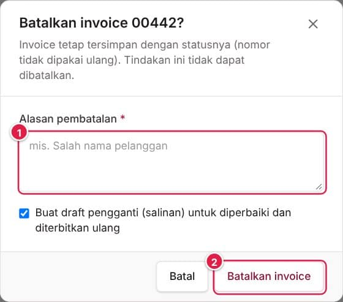
Invoice tetap tersimpan dengan status Dibatalkan dan nomornya tidak dipakai ulang. Bila sudah ada pembayaran, balikkan pembayaran lebih dulu.
- 1Alasan wajib (tercatat di riwayat).
- 2Konfirmasi pembatalan (tidak dijalankan pada contoh ini).
Pesan merah menjelaskan siapa, kapan, dan mengapa dibatalkan. PDF-nya berwatermark DIBATALKAN.
- 1Keterangan pembatalan beserta alasan.
5.8 Menduplikasi invoice
Berguna untuk pelanggan berulang. Rincian disalin, tetapi tanpa nomor, tanpa DP, dan tanpa pembayaran. Sesuaikan tanggal dan jumlah, lalu simpan atau ajukan.
Duplikasi membuat draft baru dan langsung membuka formulir ubah: rincian disalin, tetapi tanpa nomor, tanpa DP, dan tanpa pembayaran. Sesuaikan tanggal/jumlah, lalu simpan atau ajukan.
- 1Draft baru (bukan invoice terbit).
- 2Periksa tanggal — bawaan hari ini.
- 3Simpan sebagai draft.
5.9 Menghapus draft
Hanya draft (belum bernomor) yang dapat dihapus; penghapusan tercatat di audit log. Invoice yang sudah bernomor tidak dihapus, tetapi dibatalkan.
Hanya draft (belum bernomor) yang dapat dihapus; penghapusan tercatat di audit log.
- 1Konfirmasi hapus.
Tips & Kesalahan Umum
- Periksa tanggal dan jatuh tempo sebelum mengajukan; invoice terbit tidak dapat diubah.
- Gunakan kolom deskripsi baris untuk detail (nama peserta, periode); “Remark” program mengikuti produk.
- Bila salah setelah terbit: batalkan (Finance Manager) lalu duplikasi menjadi draft baru.
- Pelaksana hanya dapat mengedit/mengajukan/menghapus draft miliknya sendiri.
- DP tidak mengurangi nilai invoice; ia dicatat sebagai pembayaran pertama.
Bab 6 — Pembayaran
Peran: Pelaksana ✔ catat pembayaran · Finance Manager ✔ catat + balikkan
Pembayaran hanya dapat dicatat untuk invoice terbit dengan sisa tagihan.
6.1 Mencatat pembayaran dari halaman invoice
- Buka invoice terbit → Catat pembayaran.
- Isi tanggal uang diterima, jumlah, metode, akun penerima, referensi, dan (opsional) bukti.
- Simpan.
Dari halaman invoice terbit → Catat pembayaran. Satu invoice dapat dibayar bertahap (DP, termin, pelunasan).
- 1Tanggal uang diterima (bukan tanggal pencatatan).
- 2Jumlah yang diterima. Tidak boleh melebihi sisa tagihan.
- 3Transfer, Tunai, QRIS, Virtual Account, Cek/Giro, atau Lainnya.
- 4Akun kas/bank penerima. “Otomatis” = bank default untuk Transfer/QRIS/VA, kas untuk Tunai.
- 5Isi bila pelanggan memotong PPh (mis. PPh 23) — lihat contoh berikutnya.
- 6Nomor referensi transfer/bukti — mempermudah pencocokan dengan rekening koran.
- 7Unggah bukti transfer (PDF/JPG/PNG, opsional).
- 8Simpan. Pembayaran tidak dapat diubah/dihapus; koreksi hanya lewat pembalikan oleh Finance Manager.
Setelah dicatat, status pembayaran berubah otomatis dan uang masuk ke buku kas akun yang dipilih.
Status pembayaran berubah otomatis (Belum Dibayar → Dibayar Sebagian → Lunas). Pembayaran masuk ke buku kas akun yang dipilih.
- 1Status pembayaran.
- 2Daftar pembayaran (termasuk DP) beserta pencatatnya.
- 3Sisa tagihan terkini.
6.2 Pembayaran dengan PPh dipotong pelanggan
Bila pelanggan (mis. instansi) memotong PPh 23, uang yang masuk lebih kecil dari tagihan. Isi nominal uang yang diterima dan PPh yang dipotong; keduanya mengurangi sisa tagihan. Nomor bukti potong dapat diisi kemudian di menu Pajak (Bab 13).
Bila pelanggan (mis. instansi) memotong PPh 23, uang yang masuk lebih kecil dari tagihan. Isi nominal uang yang DITERIMA dan PPh yang dipotong — keduanya mengurangi sisa tagihan.
- 1Uang yang benar-benar masuk ke rekening.
- 2PPh yang dipotong pelanggan (menjadi kredit pajak lembaga). Nomor bukti potong dapat diisi kemudian di menu Pajak.
6.3 Pembayaran melebihi sisa tagihan
Aplikasi menolak nominal di atas sisa tagihan dan menyebutkan sisa yang benar.
- 1Pesan kesalahan memuat sisa tagihan yang boleh dibayar.
6.4 Invoice lunas dan kwitansi
Sisa nol → status Lunas. PDF otomatis berjudul KWITANSI dengan tanda LUNAS dan tanggal pelunasan.
Sisa tagihan nol → status Lunas. PDF-nya otomatis berjudul KWITANSI.
- 1Status Lunas.
- 2Unduh PDF (kini berupa kwitansi).
Invoice yang sudah lunas otomatis berjudul KWITANSI, bertanda LUNAS beserta tanggal pelunasan. Nomor dan isinya tetap sama.
6.5 Menu Pembayaran
Seluruh pembayaran dan pembalikan, berguna untuk mencocokkan dengan rekening koran.
Menu Pembayaran: seluruh pembayaran dan pembalikan. Dipakai untuk mencocokkan dengan rekening koran.
- 1Catat pembayaran: pilih invoice terbit lalu isi formulir yang sama.
- 2Cari nomor invoice, pelanggan, atau referensi transfer.
- 3Tampilkan Pembayaran saja atau Pembalikan saja.
- 4Akun kas/bank penerima.
- 5PPh yang dipotong pelanggan pada pembayaran itu.
Mencatat dari menu ini: klik Catat pembayaran, cari invoice, lalu isi formulir yang sama.
Dari halaman Pembayaran, cari invoice terbit yang masih punya sisa tagihan.
- 1Ketik nomor atau nama pelanggan lalu pilih invoice.
6.6 Membalikkan pembayaran (Finance Manager)
Pembayaran tidak dapat diedit atau dihapus. Kesalahan (salah nominal, salah akun, uang tidak jadi masuk) dikoreksi dengan pembalikan.
Pembayaran tidak dapat diedit atau dihapus. Kesalahan dikoreksi dengan pembalikan — baris pembalik bernilai negatif, baris asli tetap terlihat.
- 1Alasan wajib dan tercatat di audit.
- 2Konfirmasi. Saldo invoice dan kas/bank dikoreksi otomatis.
Baris Pembalikan (nominal negatif) muncul di daftar bersama alasannya; status invoice kembali menyesuaikan.
- 1Baris pembalik.
Pelaksana yang menemukan kesalahan pembayaran: laporkan ke Finance Manager dengan nomor invoice dan alasannya, lalu catat ulang pembayaran yang benar setelah dibalikkan.
Tips & Kesalahan Umum
- Isi tanggal uang diterima, bukan tanggal Anda mengetik.
- Isi referensi transfer; itu memudahkan pencocokan rekening koran otomatis.
- Pastikan akun penerima benar. Pilihan “Otomatis” memakai bank default (Transfer/QRIS/VA) atau kas (Tunai).
- PPh dipotong: jangan memasukkan nominal tagihan penuh sebagai uang diterima.
Bab 7 — Pengeluaran
Peran: Pelaksana ✔ ajukan, batalkan pengajuan sendiri · Finance Manager ✔ + setujui, tolak, balikkan
7.1 Alur
Pelaksana catat ──► Menunggu persetujuan ──► (Finance Manager) Setujui ──► Berlaku ──► (Finance Manager) Balikkan bila salah
└─────► Tolak (alasan wajib) ──► Ditolak
Hanya entri berstatus Berlaku yang masuk saldo, buku kas, dan laporan.
7.2 Daftar pengeluaran
Menu Pengeluaran. Pelaksana mengajukan pengeluaran; Finance Manager menyetujui. Pelaksana hanya melihat pengeluaran yang ia catat sendiri.
- 1Mencatat pengeluaran baru.
- 2Saring: Menunggu persetujuan, Berlaku, Ditolak.
- 3Pengeluaran atau Penerimaan lain / non-operasional.
- 4Hanya entri berstatus Berlaku yang masuk saldo dan laporan.
- 5Pelaksana dapat membatalkan pengajuannya sendiri selama masih menunggu persetujuan.
7.3 Mencatat pengeluaran (Pelaksana)
- Klik Catat pengeluaran.
- Pilih akun pembayar, kategori biaya, isi nominal, penerima, nomor bukti, dan keterangan.
- Lampirkan bukti. Wajib bila nominal di atas Rp 1.000.000.
- Simpan.
Pengeluaran lebih dari Rp1.000.000 tidak dapat disimpan tanpa bukti (nota/kuitansi). Di bawah itu bukti opsional tetapi dianjurkan.
- 1Pesan: bukti wajib.
Isi semua kolom bertanda *, lampirkan bukti, lalu simpan.
- 1Akun kas/bank yang membayar.
- 2Kategori biaya (menentukan posisi di laporan laba rugi). Pilih yang paling sesuai.
- 3Jumlah uang keluar.
- 4Penerima/pemasok (opsional, membantu pelacakan).
- 5Nomor nota/kuitansi.
- 6Unggah bukti (PDF/JPG/PNG).
- 7Simpan → status “Menunggu persetujuan”. Belum mengurangi saldo sampai disetujui.
Entri tersimpan berstatus “Menunggu persetujuan”. Finance Manager menerima pemberitahuan di lonceng.
- 1Pengeluaran yang baru diajukan.
7.4 Persetujuan (Finance Manager)
Finance Manager melihat seluruh pengeluaran. Pengajuan yang menunggu muncul di atas bersama tombol Setujui / Tolak.
- 1Pengingat jumlah pengajuan yang menunggu.
- 2Setujui: entri menjadi Berlaku (masuk saldo & laporan).
- 3Tolak dengan alasan (tidak pernah masuk saldo/laporan).
Menyetujui
Periksa nominal, kategori, dan bukti. Pencatat tidak dapat menyetujui pengeluarannya sendiri.
Periksa nominal, kategori, dan bukti sebelum menyetujui. Pencatat tidak dapat menyetujui pengeluarannya sendiri.
- 1Setujui.
Menolak
Alasan wajib dan terlihat oleh pencatat. Pencatat dapat mencatat ulang dengan perbaikan.
- 1Alasan penolakan.
- 2Tolak.
7.5 Membalikkan pengeluaran berlaku (Finance Manager)
Pengeluaran yang sudah Berlaku tidak dapat diedit/dihapus. Koreksi dengan pembalikan: dibuat baris pembalik bertanggal hari ini, entri asli tetap tampil.
- 1Alasan wajib.
- 2Konfirmasi pembalikan.
Status tiap entri: Berlaku, Ditolak (beserta alasan), dan baris pembalik.
Tips & Kesalahan Umum
- Pilih kategori yang paling sesuai; kategori menentukan posisi di laporan laba rugi (beban langsung program atau beban operasional).
- Foto nota harus jelas dan terbaca; nota buram adalah alasan penolakan paling umum.
- Salah input sebelum disetujui: Batalkan pengajuan lalu catat ulang. Setelah berlaku: minta Finance Manager membalikkan.
- Pengeluaran yang ditolak tidak pernah memengaruhi saldo.
Bab 8 — Kas & Bank
Peran: Pelaksana ✔ transfer, penerimaan lain (diajukan) · Finance Manager ✔ + penerimaan/non-operasional langsung berlaku, balikkan transfer
Saldo = saldo awal (diinput Administrator) + seluruh mutasi berlaku sejak tanggal saldo awal.
8.1 Tampilan utama
Menu Kas & Bank menampilkan saldo tiap akun dan buku kas. Pelaksana dapat mencatat transfer antar akun dan penerimaan lain (menunggu persetujuan), tetapi tidak dapat membalikkan.
- 1Memindahkan dana antar kas/bank.
- 2Mencatat uang masuk non-invoice (bunga, jasa giro, hibah). Menunggu persetujuan Finance Manager.
- 3Total seluruh akun aktif.
- 4Klik kartu akun untuk melihat buku kasnya.
- Kartu akun menampilkan saldo dan saldo awal. Klik kartu untuk melihat buku kas akun itu.
- Pemberitahuan di atas halaman: saldo negatif (merah; periksa penerimaan yang belum dicatat atau salah input), pembayaran invoice belum dialokasikan ke akun (kuning), dan entri menunggu persetujuan (biru; belum dihitung dalam saldo).
8.2 Transfer antar akun
Memindahkan dana antar kas/bank (mis. isi kas kecil). Total kas tidak berubah dan laba rugi tidak terpengaruh. Transfer langsung berlaku tanpa persetujuan.
Total kas tidak berubah dan laba rugi tidak terpengaruh. Transfer langsung berlaku (tanpa persetujuan).
- 1Tanggal transfer (tidak boleh melewati hari ini).
- 2Jumlah yang dipindahkan.
- 3Akun sumber dana.
- 4Akun tujuan (harus berbeda dari sumber).
- 5Catatan opsional.
- 6Simpan.
8.3 Penerimaan lain
Untuk uang masuk yang bukan pembayaran invoice (bunga, jasa giro, hibah).
- Pelaksana: kategori terbatas pada akun pendapatan; arah otomatis Masuk; entri menunggu persetujuan.
- Finance Manager: dapat memilih kategori non-operasional (modal, prive, pinjaman, aset); entri langsung berlaku.
Untuk uang masuk yang bukan pembayaran invoice. Kategori terbatas pada akun pendapatan; arah otomatis ‘Masuk’. Entri menunggu persetujuan Finance Manager.
- 1Akun tempat uang diterima.
- 2Akun pendapatan lain-lain.
- 3Jumlah uang masuk.
- 4Pihak pemberi (opsional).
- 5Uraian wajib diisi.
Transfer muncul di ‘Transfer antar akun terbaru’ dan di buku kas kedua akun. Peringatan biru mengingatkan ada entri yang menunggu persetujuan.
- 1Pengingat entri yang belum disetujui (belum masuk saldo).
- 2Transfer yang baru dicatat.
Finance Manager menyetujui penerimaan lain
Penerimaan yang diajukan Pelaksana tampil di menu Pengeluaran (status Menunggu persetujuan) dan disetujui seperti pengeluaran.
Penerimaan lain dari Pelaksana tampil di menu Pengeluaran dengan status Menunggu persetujuan, dan disetujui sama seperti pengeluaran.
- 1Penerimaan lain yang diajukan Pelaksana.
- 2Setujui → masuk saldo & laporan.
8.4 Tampilan Finance Manager
Finance Manager memiliki semua aksi Pelaksana ditambah kolom Aksi untuk membalikkan transfer, dan tombol penerimaan/non-operasional yang langsung berlaku.
- 1Transfer antar akun.
- 2Penerimaan lain & non-operasional (modal, prive, pinjaman, aset) — langsung berlaku.
- 3Aksi pembalikan hanya untuk Finance Manager.
Kategori mencakup pendapatan lain, modal, prive, pinjaman, dan aset. Arah (Masuk/Keluar) dapat dipilih untuk kategori non-pendapatan; entri langsung berlaku.
- 1Pilih kategori; menentukan arah dan laporan.
- 2Masuk / Keluar (terkunci untuk pendapatan).
8.5 Buku kas per akun
Setiap mutasi (pembayaran invoice, pengeluaran, penerimaan, transfer) tampil dengan saldo berjalan.
Klik kartu akun untuk melihat buku kasnya: saldo awal periode, setiap mutasi (pembayaran invoice, pengeluaran, penerimaan, transfer), saldo berjalan, dan saldo akhir.
- 1Ubah periode buku kas.
- 2Saldo awal periode.
- 3Saldo akhir periode (sama dengan saldo di kartu bila sampai hari ini).
8.6 Membalikkan transfer (Finance Manager)
Transfer tidak dapat diedit/dihapus. Koreksi dengan pembalikan: dibuat transfer pembalik bertanggal hari ini, transfer asli tetap tercatat.
- 1Alasan wajib.
- 2Konfirmasi.
Transfer asli berstatus ‘Sudah dibalik’; baris pembalik berlatar merah muda berstatus ‘Pembalikan’ lengkap dengan alasan.
- 1Transfer asli.
- 2Baris pembalik.
Tips & Kesalahan Umum
- Transfer salah akun → minta Finance Manager membalikkan, lalu catat ulang.
- Saldo negatif hampir selalu berarti ada penerimaan yang belum dicatat.
- Jangan mencatat penerimaan invoice di sini; catat sebagai pembayaran pada invoice (Bab 6).
Bab 9 — Jurnal
Peran: Pelaksana ✔ lihat · Finance Manager ✔ lihat, catat jurnal manual, balikkan
Buku jurnal seluruh transaksi. Jurnal dari pembayaran, entri kas, dan transfer dibuat otomatis (tidak mungkin berselisih). Jurnal manual dipakai hanya untuk penyesuaian (mis. penyusutan) dan saldo awal akun non-kas (aset tetap, utang, modal).
9.1 Daftar jurnal
Buku jurnal seluruh transaksi. Jurnal dari pembayaran, entri kas, dan transfer dibuat otomatis. Pelaksana hanya melihat; mencatat dan membalikkan jurnal adalah wewenang Finance Manager.
- 1Saring menurut sumber jurnal.
- 2Satu jurnal: nomor, tanggal, uraian, dan baris debit/kredit.
- 3Lencana sumber jurnal.
Finance Manager dapat mencatat jurnal manual (penyesuaian, saldo awal akun non-kas) dan membalikkan jurnal manual. Status penguncian buku tampil di atas daftar.
- 1Mencatat jurnal manual.
- 2Rentang tanggal.
9.2 Mencatat jurnal manual (Finance Manager)
- Klik Catat jurnal.
- Pilih Jenis: Penyesuaian/koreksi atau Saldo awal.
- Isi tanggal, keterangan (wajib), referensi (opsional).
- Isi minimal dua baris: pilih akun, lalu debit atau kredit (satu baris tidak boleh keduanya).
- Pastikan total debit = total kredit; tombol Simpan jurnal baru aktif bila seimbang.
Akun kas/bank tidak dapat dipilih di sini; gunakan modul Kas & Bank agar saldo kas selalu cocok.
Jurnal harus seimbang (total debit = total kredit) agar dapat disimpan. Akun kas/bank tidak dapat dipilih di sini; gunakan modul Kas & Bank.
- 1Penyesuaian/koreksi, atau Saldo awal akun non-kas.
- 2Tanggal jurnal.
- 3Nomor dokumen pendukung (opsional).
- 4Uraian jurnal (wajib).
- 5Pilih akun per baris.
- 6Isi debit ATAU kredit pada satu baris.
- 7Total harus sama dengan total kredit.
- 8Tambah baris untuk jurnal majemuk.
- 9Aktif hanya bila seimbang.
Jurnal manual berlencana biru. Tombol Balikkan membuat jurnal pembalik (debit ↔ kredit) bertanggal hari ini; jurnal asli tetap tercatat.
- 1Jurnal yang baru dicatat.
- 2Balikkan (koreksi).
9.3 Membalikkan jurnal manual
Alasan wajib. Jurnal pembalik berlencana ‘Pembalikan’, jurnal asli ‘Sudah dibalik’.
- 1Alasan wajib.
- 2Konfirmasi.
Jurnal asli dan pembaliknya sama-sama tampil sehingga jejak audit utuh.
Tips
- Jurnal saldo awal bertanggal tepat pada tanggal mulai pembukuan dan harus seimbang.
- Tulis keterangan yang bisa dipahami auditor enam bulan lagi.
- Jurnal pada bulan yang sudah ditutup ditolak (Bab 14).
Bab 10 — Rekonsiliasi Bank
Peran: Pelaksana ✔ impor, cocokkan, catat dari mutasi (diajukan), hapus draft · Finance Manager ✔ + finalisasi dan buka kembali
Rekonsiliasi mencocokkan rekening koran bank dengan buku. Targetnya: Selisih = 0.
Saldo akhir bank + transaksi buku yang masih beredar = Saldo bank disesuaikan ═ Saldo buku
10.1 Alur kerja
- Unduh CSV mutasi dari internet banking.
- Impor rekening koran (Pelaksana).
- Pencocokan otomatis, lalu cocokkan sisanya secara manual.
- Mutasi yang hanya ada di bank (biaya admin, bunga): Catat dari mutasi.
- Selisih 0 → Finalisasi (Finance Manager).
10.2 Halaman awal
Kartu per akun menunjukkan terakhir direkonsiliasi sampai kapan dan periode berikutnya. Daftar rekening koran masih kosong.
- 1Mulai dengan mengimpor CSV mutasi dari internet banking.
- 2Tanggal awal periode yang harus diimpor berikutnya.
10.3 Mengimpor rekening koran
Siapkan: periode (awal periode harus bersambung dengan periode sebelumnya), saldo awal dan saldo akhir menurut rekening koran, dan berkas CSV.
Pilih akun, periode, saldo awal dan akhir sesuai rekening koran bank, lalu unggah CSV (atau tempel isinya). Tombol Impor baru aktif setelah pratinjau valid.
- 1Akun bank yang direkonsiliasi.
- 2Awal periode harus bersambung dengan periode sebelumnya.
- 3Saldo awal menurut rekening koran.
- 4Saldo akhir menurut rekening koran.
- 5Unggah berkas CSV dari internet banking.
- 6Periksa pembacaan CSV sebelum diimpor.
Klik Pratinjau. Sistem mendeteksi kolom, format tanggal, dan format angka. Ubah bila keliru lalu Terapkan pemetaan. Tombol Impor hanya aktif jika berkas tanpa error dan saldo awal + mutasi = saldo akhir.
Sistem mendeteksi kolom, format tanggal, dan format angka otomatis. Ubah bila keliru, klik Terapkan pemetaan. Centang hijau ‘Saldo awal + mutasi = saldo akhir’ menandakan berkas lengkap.
- 1Ringkasan: jumlah baris, total mutasi, rentang tanggal.
- 2Format tanggal (hari/bulan/tahun, dst.).
- 3Format angka (1.234.567,00 atau 1,234,567.00).
- 4Terapkan setelah mengubah pemetaan.
- 5Pengecekan kelengkapan berkas.
Memetakan kolom: kolom Jumlah (bertanda) dipakai bila bank memberi satu kolom positif/negatif; bila bank memisahkan Debit (keluar) dan Kredit (masuk), pilih keduanya. Format angka Indonesia 1.234.567,00; format Inggris 1,234,567.00.
10.4 Ruang kerja rekonsiliasi
Atas: ringkasan selisih. Tengah: mutasi bank (baris kuning belum cocok). Bawah: transaksi buku yang belum muncul di bank. Tujuan: selisih 0.
- 1Saldo akhir menurut bank.
- 2Saldo bank + transaksi buku yang beredar.
- 3Harus 0 sebelum finalisasi.
- 4Cocokkan otomatis menurut nominal & tanggal.
- 5Hapus draft bila salah impor.
Pencocokan otomatis
Menyamakan nominal yang persis sama dengan transaksi buku dalam jendela tanggal (± 0–14 hari; bawaan 5).
Baris yang nominalnya sama persis dengan transaksi buku dalam jendela tanggal langsung dicocokkan (ditandai ‘otomatis’). Sisanya perlu ditangani manual.
- 1Pencocokan otomatis.
- 2Masih perlu tindakan.
- 3Jendela toleransi tanggal (± hari).
Pencocokan manual
Untuk baris yang tidak cocok otomatis (mis. tanggal bergeser jauh atau satu setoran untuk beberapa transaksi). Pilih transaksi yang totalnya persis sama dengan sisa baris mutasi.
Pilih transaksi buku yang jumlahnya persis sama dengan sisa baris mutasi (urut dari yang paling mendekati). Beberapa transaksi boleh digabung bila totalnya sama.
- 1Centang transaksi buku yang sesuai.
- 2Total terpilih harus = sisa; baru tombol aktif.
- 3Simpan pencocokan.
Tombol Lepas membatalkan pencocokan sebuah baris selama masih draft.
Catat dari mutasi
Untuk mutasi yang belum ada di buku (biaya admin, bunga bank).
- Pelaksana: entri tercatat menunggu persetujuan Finance Manager; setelah disetujui, cocokkan barisnya.
- Finance Manager: entri langsung berlaku dan otomatis dicocokkan.
- Uang keluar di atas Rp 1.000.000 wajib melampirkan bukti.
Untuk mutasi yang hanya ada di bank (biaya admin, bunga). Pelaksana mencatat entri kas dari mutasi; entri menunggu persetujuan Finance Manager, setelah itu baris dicocokkan.
- 1Kategori biaya/pendapatan.
- 2Uraian (terisi dari mutasi).
- 3Pelaksana: ‘Catat (menunggu persetujuan)’.
Finance Manager mencatat langsung berlaku dan baris mutasi otomatis dicocokkan.
- 1Catat & cocokkan sekaligus.
10.5 Finalisasi (Finance Manager)
Setelah selisih 0, tombol Finalisasi aktif.
Setelah semua baris cocok, selisih menjadi 0 (✓ hijau) dan tombol Finalisasi aktif. Transaksi buku yang masih beredar ditampilkan di bagian bawah sebagai alasan perbedaan saldo.
- 1Selisih 0.
- 2Hanya Finance Manager dapat memfinalisasi.
- 3Transaksi buku yang belum tampil di bank.
Setelah final, pencocokan tidak dapat diubah kecuali dibuka kembali dengan alasan (hanya periode terakhir).
- 1Finalisasi.
Status ‘Final’. Aksi tersisa: Buka kembali (dengan alasan) dan ekspor.
- 1Buka kembali bila ada koreksi (alasan tercatat di audit).
Membuka kembali
Hanya rekening koran terakhir yang final pada akun tersebut. Alasan wajib dan tercatat di audit.
Hanya rekening koran terakhir yang sudah final pada akun tersebut yang dapat dibuka kembali.
- 1Alasan wajib.
- 2Konfirmasi.
Kartu akun kini menunjukkan tanggal terakhir direkonsiliasi; kolom Status ‘Final’. Impor periode berikutnya mulai dari tanggal yang disarankan.
Tips & Kesalahan Umum
- Selisih tidak nol? Periksa: pembayaran/pengeluaran belum dicatat di buku, nominal salah, atau pencocokan keliru.
- “Transaksi buku yang beredar” normal untuk setoran atau cek dalam perjalanan; ia akan cocok di periode berikutnya.
- Salah impor? Hapus draft lalu impor ulang; transaksi buku tidak terpengaruh.
- Impor per bulan secara rutin; jangan menumpuk berbulan-bulan.
Bab 11 — Laporan Operasional
Peran: Pelaksana ✔ · Finance Manager ✔ (lihat & ekspor CSV/Excel)
Laporan operasional penagihan. Bukan laporan akuntansi: nilai invoice (penerbitan) dan penerimaan kas dilaporkan terpisah dan tidak boleh dijumlahkan.
| Kelompok | Laporan | Fungsi |
|---|---|---|
| Penerbitan invoice | Daftar Invoice | Seluruh invoice terbit & batal menurut tanggal invoice |
| Rekap per Pelanggan | Nilai invoice, jumlah dibayar, dan sisanya per pelanggan | |
| Rekap per Produk / Skema | Nilai bersih baris per produk | |
| Invoice Lunas | Invoice terbit yang sudah lunas | |
| Invoice Dibatalkan | Beserta alasan dan pelakunya | |
| Penerimaan kas | Rekap Pembayaran Masuk | Menurut tanggal pembayaran, termasuk pembalikan |
| Rekap Bulanan & Tahunan | Invoice terbit vs penerimaan kas per bulan | |
| Piutang | Daftar Piutang | Sisa tagihan > 0 per hari ini beserta umur piutang |
| Invoice Jatuh Tempo | Melewati jatuh tempo, belum lunas |
Menu Laporan tersedia untuk Pelaksana dan Finance Manager. Pilih jenis laporan di baris lencana, atur periode dan pelanggan, lalu ekspor CSV/Excel.
- 1Kelompok laporan: penerbitan invoice, penerimaan kas, piutang.
- 2Jenis laporan aktif (warna marun).
- 3Periode laporan (bawaan: 1 Januari s.d. hari ini).
- 4Saring per pelanggan.
- 5Ekspor CSV.
- 6Ekspor Excel (.xlsx).
Invoice terbit dengan sisa tagihan > 0 per hari ini, beserta umur piutang. Laporan piutang selalu ‘per hari ini’, sehingga tidak memiliki filter tanggal.
- 1Jenis laporan: piutang.
- 2Hanya yang sudah melewati jatuh tempo.
Membandingkan nilai invoice terbit dengan penerimaan kas per bulan. Dua angka ini berbeda dan tidak boleh dijumlahkan.
- 1Jenis laporan.
- 2Catatan: laporan ini operasional, bukan laporan keuangan akuntansi.
Penerimaan kas menurut tanggal pembayaran, termasuk pembalikan (negatif).
Cara memakai
- Pilih jenis laporan.
- Atur periode dan pelanggan (laporan piutang selalu per hari ini, tanpa filter tanggal).
- Klik Terapkan, lalu CSV atau Excel untuk mengunduh. Ekspor mengikuti filter yang tampil.
Tips
- Gunakan Daftar Piutang untuk menyusun penagihan mingguan.
- Gunakan Rekap Bulanan untuk membandingkan penerbitan vs kas.
Bab 12 — Laporan Keuangan
Peran: Pelaksana ✔ hanya lihat & ekspor · Finance Manager ✔ lihat & ekspor
Laporan basis kas dari buku besar: pendapatan diakui saat uang diterima, beban saat dibayar. Hanya entri berlaku (disetujui) yang dihitung.
| Laporan | Isi |
|---|---|
| Laba Rugi | Pendapatan, beban langsung program, laba kotor, beban operasional, pendapatan lain, laba bersih |
| Arus Kas | Kas dari operasi, investasi, pendanaan |
| Neraca | Aset, kewajiban, ekuitas per tanggal |
| Neraca Saldo | Saldo seluruh akun; debit = kredit |
| Buku Besar | Mutasi satu akun dengan saldo berjalan |
12.1 Laba Rugi
Pelaksana dapat MELIHAT seluruh laporan keuangan namun tidak mengubahnya. Pendapatan diakui saat uang diterima, beban saat dibayar; hanya entri berlaku yang dihitung.
- 1Lima laporan: Laba Rugi, Arus Kas, Neraca, Neraca Saldo, Buku Besar.
- 2Periode laporan.
- 3Bandingkan dengan periode sebelumnya / tahun lalu.
- 4Ekspor PDF (juga CSV & Excel).
- 5Baris hasil akhir.
PPN yang diterima dikeluarkan dari pendapatan (dicatat sebagai utang PPN). PPh yang dipotong pelanggan dicatat sebagai kredit pajak, bukan uang masuk.
12.2 Pembanding
Pilih Pembanding (periode sebelumnya / tahun lalu) untuk laba rugi, neraca, dan arus kas. Ekspor mengikuti tampilan yang sama.
Memilih pembanding menampilkan kolom Periode ini, Pembanding, Selisih, dan persen perubahan. Ekspor mengikuti tampilan yang sama.
- 1Pilih pembanding lalu klik Terapkan.
- 2Tabel pembanding.
12.3 Arus Kas
Baris pengecekan memastikan kas akhir arus kas = kas pada neraca. Bila tampil merah “KAS TIDAK COCOK”, hubungi Administrator.
Arus kas dikelompokkan operasi, investasi, pendanaan. Baris hijau di bawah memastikan kas akhir arus kas sama dengan kas di neraca.
- 1Pengecekan: kas akhir arus kas = kas pada neraca.
12.4 Neraca
Posisi aset, kewajiban, dan ekuitas per tanggal. Laporan ‘per tanggal’ hanya memiliki satu filter tanggal.
- 1Tanggal posisi neraca.
12.5 Neraca Saldo
Saldo seluruh akun; total debit harus sama dengan total kredit.
12.6 Buku Besar
Pilih satu akun, lalu Terapkan.
Pilih satu akun untuk melihat seluruh mutasinya dengan saldo berjalan. Ekspor aktif setelah akun dipilih.
- 1Pilih akun.
Tips
- Peringatan di atas laporan (pembayaran belum dialokasikan, pengeluaran menunggu persetujuan) menjelaskan mengapa angka belum final.
- Ekspor PDF untuk arsip atau rapat; Excel untuk analisis.
- Laporan ini estimasi manajemen berbasis kas, bukan SPT.
Bab 13 — Pajak
Peran: Pelaksana ✔ lihat, isi nomor bukti potong · Finance Manager ✔ + catat setoran pajak dan masukan tahunan · Profil pajak: Administrator
Rekap PPN, PPh yang dipotong pelanggan, estimasi PPh badan, dan setoran pajak. Ini estimasi manajemen dari pembukuan basis kas, bukan SPT. Sistem tidak mengasumsikan tarif.
13.1 Ringkasan
Ringkasan saldo pajak dan profil pajak. Pelaksana hanya melihat; mengubah profil (Administrator) dan mencatat setoran pajak (Finance Manager) tidak tersedia baginya.
- 1Tab: Ringkasan, PPN, PPh dipotong pelanggan, Estimasi PPh badan, Setoran pajak.
- 2Saldo utang PPN dari penerimaan kas.
- 3Total PPh yang dipotong pelanggan (kredit pajak).
- 4Profil pajak lembaga (diisi Administrator).
13.2 PPN
Lembaga non-PKP umumnya bernilai nol. Tabel membandingkan PPN menurut invoice (acuan faktur pajak) dengan PPN yang diterima kas.
Rekap PPN per masa: menurut invoice (acuan faktur pajak) dan menurut uang yang diterima. Lembaga non-PKP umumnya bernilai nol.
- 1Periode rekap.
- 2Ekspor.
13.3 PPh dipotong pelanggan
Register seluruh pembayaran yang dipotong PPh. Lencana Belum ada berarti nomor bukti potong belum diisi.
Daftar pembayaran yang dipotong PPh oleh pelanggan. Lencana ‘Belum ada’ berarti nomor bukti potong belum diisi — kejar dari pelanggan lalu isi dengan tombol ‘Isi nomor’.
- 1Nomor bukti potong belum diisi.
- 2Isi nomor bukti potong (hanya sekali).
Mengisi nomor bukti potong
Dapat diisi satu kali. Untuk koreksi, minta Finance Manager membalikkan pembayaran lalu catat ulang dengan nomor yang benar.
Nomor hanya dapat diisi sekali. Bila salah, balikkan pembayaran (Finance Manager) lalu catat ulang dengan nomor yang benar.
- 1Nomor bukti potong dari pelanggan.
13.4 Estimasi PPh badan
Estimasi manajemen dari pembukuan. Rezim dan tarif ditetapkan Administrator di profil pajak; bila belum diaktifkan akan tampil pemberitahuan seperti ini.
- 1Tahun pajak.
Bila rezim dan tarif sudah diaktifkan Administrator, halaman menampilkan perhitungan dan jurnal penyesuaian yang disarankan, yang dapat dicatat Finance Manager. Untuk tarif umum, Finance Manager menginput masukan tahun (koreksi fiskal, kompensasi kerugian, pengurang) dari akuntan.
13.5 Setoran pajak (Finance Manager)
Kas keluar yang mengurangi utang PPN atau utang PPh badan (bukan beban). NTPN/ID billing wajib sebagai bukti.
Setoran pajak mengurangi utang PPN/PPh badan (bukan beban). Hanya Finance Manager yang dapat mencatat.
- 1Catat setoran pajak baru.
Isi jenis pajak, masa, tanggal, akun sumber dana, nominal, dan NTPN/ID billing (wajib sebagai bukti).
- 1PPN atau PPh badan.
- 2Contoh: 2026-09 atau 2026.
- 3Akun kas/bank sumber.
- 4Nominal disetor.
- 5Bukti setor (wajib).
13.6 Profil pajak (Administrator)
Administrator mengatur status PKP, rezim PPh badan, dan tarif sesuai arahan konsultan pajak. Sistem tidak mengasumsikan tarif.
- 1Tidak dihitung / tarif umum / final.
Tips
- Setiap bulan, tindak lanjuti baris Belum ada pada register PPh agar kredit pajak punya bukti.
- Konsultasikan tarif dan rezim dengan konsultan pajak sebelum mengaturnya.
Bab 14 — Tutup Buku
Peran: Pelaksana ✔ lihat · Finance Manager ✔ tutup dan buka kembali
Penutupan menyimpan foto neraca saldo + hash dan mengunci transaksi bertanggal sampai akhir bulan itu. Bulan ditutup berurutan dari yang paling awal.
14.1 Daftar periode
Pelaksana dapat melihat status tiap periode tetapi tidak dapat menutup atau membuka kembali. Kunci buku menolak transaksi bertanggal sampai akhir bulan yang ditutup.
- 1Satu baris per bulan: status, total aset, laba, catatan penutupan.
Bulan ditutup berurutan dari yang paling awal. Tombol ‘Tutup bulan’ hanya muncul pada bulan yang boleh ditutup berikutnya.
- 1Tutup bulan ini.
| Status | Artinya |
|---|---|
| Belum ditutup | Bulan sudah berlalu, belum ditutup |
| Berjalan | Bulan berjalan, belum boleh ditutup |
| Ditutup | Terkunci, ada foto & hash |
| Dibuka kembali | Pernah ditutup lalu dibuka (alasan tercatat) |
14.2 Menutup bulan
- Pastikan transaksi bulan itu lengkap: invoice, pembayaran, pengeluaran sudah disetujui, rekonsiliasi bank selesai.
- Klik Tutup bulan pada bulan yang berhak ditutup.
- Baca daftar periksa: ✔ lolos, ✘ menghalangi (selesaikan dulu), ⚠ peringatan (boleh dilanjutkan bila diakui).
- Isi catatan penutupan (min. 5 karakter) lalu klik Tutup
.
Sistem memeriksa pembukuan: centang hijau lolos; merah menghalangi (harus diselesaikan); kuning peringatan (boleh ditutup bila diakui). Wajib mengisi catatan penutupan.
- 1Hasil pemeriksaan otomatis.
- 2Catatan wajib (min. 5 karakter).
Peringatan kuning harus diberi tanda ‘diakui’. Setelah menekan ‘Tutup …’, foto neraca saldo dan hash disimpan.
- 1Konfirmasi penutupan.
Status ‘Ditutup’ beserta ‘Foto cocok’ (hash cocok dengan buku besar). Bila muncul ‘Foto berubah!’, hubungi Administrator.
- 1Integritas angka periode terjaga.
- 2Buka kembali (alasan wajib) bila perlu koreksi.
Foto cocok berarti angka periode sama dengan perhitungan ulang buku besar. Bila muncul Foto berubah!, segera hubungi Administrator.
14.3 Membuka kembali
Hanya periode yang paling akhir ditutup. Alasan wajib dan tercatat di audit log.
Hanya periode yang paling akhir ditutup yang dapat dibuka. Alasan tercatat di audit log.
- 1Alasan (min. 5 karakter).
- 2Konfirmasi.
Tips & Kesalahan Umum
- Tutup bulan setelah rekonsiliasi bank final dan tidak ada pengeluaran menunggu persetujuan.
- Setelah ditutup, koreksi dilakukan dengan pembalikan bertanggal hari ini (jatuh di bulan berjalan).
- Transaksi bertanggal pada bulan tertutup akan ditolak; ini disengaja.
Bab 15 — Pengaturan dan Audit Log (tampilan untuk Pelaksana & Finance Manager)
Peran: Pelaksana ✔ lihat · Finance Manager ✔ lihat · Mengubah: Administrator
Pelaksana dan Finance Manager dapat melihat beberapa tab pengaturan untuk memeriksa data yang tercetak atau dipakai sistem, tetapi tidak dapat mengubahnya.
15.1 Perusahaan & dokumen
Identitas lembaga yang tampil pada PDF invoice.
Identitas lembaga yang tampil di PDF invoice. Pelaksana dan Finance Manager hanya melihat; perubahan dilakukan Administrator.
- 1Bagian pengaturan yang terlihat untuk peran Anda.
15.2 Rekening bank
Rekening tujuan yang dapat dipilih pada invoice.
Rekening bank yang dicetak pada invoice.
- 1Bagian pengaturan yang terlihat untuk peran Anda.
15.3 Penomoran invoice
Format dan urutan nomor berikutnya.
Format dan urutan nomor invoice berikutnya.
- 1Bagian pengaturan yang terlihat untuk peran Anda.
15.4 Keuangan
Akun kas/bank, saldo awal, dan bagan akun. Bila akun kas belum ada, menu Kas & Bank memintanya dibuat Administrator.
Akun kas/bank beserta saldo awal dan bagan akun. Finance Manager dan Pelaksana hanya melihat; Administrator mengelola.
- 1Bagian pengaturan yang terlihat untuk peran Anda.
15.5 Tampilan Administrator (sebagai gambaran)
Tab Pajak, Pengguna, dan Integrasi hanya ada bagi Administrator.
Administrator menambah akun kas/bank, saldo awal, dan mengelola bagan akun. Contoh di sini hanya untuk gambaran; Pelaksana dan Finance Manager tidak melakukannya.
Seluruh aksi penting tercatat (siapa, kapan, apa). Menu ini hanya untuk Administrator.
Kapan menghubungi Administrator?
| Kebutuhan | Hubungi |
|---|---|
| Lupa password / akun terkunci / reset 2FA | Administrator |
| Tambah produk, ubah harga katalog | Administrator |
| Tambah rekening bank atau akun kas, ubah saldo awal | Administrator |
| Ubah format nomor invoice | Administrator |
| Profil pajak (PKP, rezim, tarif) | Administrator |
| “Foto berubah!” atau “KAS TIDAK COCOK” | Administrator (segera) |
Lampiran A — Alur Kerja End-to-End
Contoh satu siklus lengkap. P = Pelaksana, FM = Finance Manager.
| # | Langkah | Siapa | Bab |
|---|---|---|---|
| 1 | Pelanggan baru? Cari dulu, tambah bila belum ada | P | 3 |
| 2 | Buat invoice → simpan draft → periksa PDF draft | P | 5.3–5.4 |
| 3 | Ajukan untuk verifikasi | P | 5.4 |
| 4 | Periksa; setujui & terbitkan atau kembalikan dengan catatan | FM | 5.5 |
| 5 | (Bila dikembalikan) perbaiki dan ajukan ulang | P | 5.5 |
| 6 | Kirim PDF invoice terbit ke pelanggan | P/FM | 5.6 |
| 7 | Uang masuk → catat pembayaran (DP/termin/pelunasan), isi referensi dan PPh dipotong bila ada | P | 6 |
| 8 | Invoice lunas → unduh kwitansi | P/FM | 6.4 |
| 9 | Pengeluaran operasional: catat + lampirkan bukti | P | 7 |
| 10 | Setujui atau tolak pengeluaran | FM | 7.4 |
| 11 | Isi kas kecil / pindah dana antar akun | P | 8.2 |
| 12 | Bunga bank, jasa giro: catat penerimaan lain | P (diajukan) / FM | 8.3 |
| 13 | Akhir bulan: impor rekening koran, cocokkan, catat biaya admin/bunga | P | 10 |
| 14 | Finalisasi rekonsiliasi | FM | 10.5 |
| 15 | Isi nomor bukti potong PPh yang masuk | P | 13.3 |
| 16 | Jurnal penyesuaian (mis. penyusutan) | FM | 9.2 |
| 17 | Setoran pajak bila ada | FM | 13.5 |
| 18 | Periksa laporan keuangan & arus kas = neraca | FM (P melihat) | 12 |
| 19 | Tutup buku bulan itu | FM | 14 |
Skenario koreksi
| Kesalahan | Penanganan |
|---|---|
| Invoice draft salah | Pelaksana ubah (atau hapus) draft |
| Invoice diajukan, salah | Pelaksana tarik kembali, perbaiki, ajukan ulang |
| Invoice terbit, salah | FM batalkan (balikkan pembayaran dulu bila ada) → duplikasi → ajukan baru |
| Pembayaran salah catat | FM balikkan → P catat ulang yang benar |
| Pengeluaran salah, belum disetujui | P batalkan pengajuan, catat ulang |
| Pengeluaran salah, sudah berlaku | FM balikkan → P catat ulang |
| Transfer salah | FM balikkan → P catat ulang |
| Jurnal manual salah | FM balikkan → catat ulang |
| Rekonsiliasi final tapi ada koreksi | FM buka kembali (periode terakhir) |
| Bulan sudah ditutup | FM buka kembali periode terakhir, atau koreksi bertanggal hari ini |
Lampiran B — Rutinitas Kerja
Pelaksana
| Kapan | Kegiatan |
|---|---|
| Harian | Cek lonceng (invoice dikembalikan, jatuh tempo). Input invoice baru & ajukan. Catat pembayaran yang masuk (isi referensi). Catat pengeluaran dengan bukti. Tindak lanjuti draft yang dikembalikan. |
| Mingguan | Tinjau Daftar Piutang dan Invoice Jatuh Tempo; tagih pelanggan. Pastikan tidak ada pengajuan menggantung. Rapikan pelanggan duplikat/arsip. |
| Bulanan | Impor rekening koran tiap akun bank; cocokkan otomatis lalu manual; catat biaya admin/bunga. Lengkapi nomor bukti potong PPh. Siapkan bahan penutupan bulan bagi Finance Manager. |
Finance Manager
| Kapan | Kegiatan |
|---|---|
| Harian | Lonceng & Dashboard. Verifikasi/terbitkan atau kembalikan invoice. Setujui/tolak pengeluaran & penerimaan lain. |
| Mingguan | Tinjau piutang & jatuh tempo; evaluasi arus kas; cek pengajuan yang tertunda. |
| Bulanan | Finalisasi rekonsiliasi. Jurnal penyesuaian. Setoran pajak. Periksa Laba Rugi, Arus Kas, Neraca (arus kas = neraca). Tutup buku. |
| Tahunan | Masukan tahun PPh badan bersama akuntan; cetak laporan tahunan (PDF/Excel). |
Lampiran C — Matriks Hak Akses
✔ = boleh · ✘ = tidak ada tombol/ditolak sistem · (A) = hanya Administrator.
| Fitur | Pelaksana | Finance Manager |
|---|---|---|
| Dashboard | ✘ | ✔ |
| Lihat daftar & detail invoice | ✔ | ✔ |
| Buat / ubah / hapus draft | ✔ (milik sendiri) | ✔ |
| Harga satuan, baris bebas, diskon | ✔ | ✔ |
| Ajukan / tarik kembali pengajuan | ✔ (milik sendiri) | — |
| Setujui & terbitkan, kembalikan | ✘ | ✔ |
| Batalkan invoice terbit | ✘ | ✔ |
| Duplikasi invoice | ✔ | ✔ |
| PDF draft / PDF invoice terbit / riwayat | ✔ | ✔ |
| Catat pembayaran | ✔ | ✔ |
| Balikkan pembayaran | ✘ | ✔ |
| Pelanggan: lihat, tambah, ubah, arsipkan | ✔ | ✔ |
| Produk: lihat | ✔ | ✔ |
| Produk: kelola | (A) | (A) |
| Catat pengeluaran (diajukan) | ✔ | ✔ (langsung berlaku) |
| Lihat pengeluaran | milik sendiri | semua |
| Setujui / tolak pengeluaran | ✘ | ✔ |
| Balikkan pengeluaran, transfer, jurnal | ✘ | ✔ |
| Kas & Bank: lihat saldo & buku kas | ✔ | ✔ |
| Transfer antar akun | ✔ | ✔ |
| Penerimaan lain | ✔ (diajukan) | ✔ (langsung berlaku) |
| Penerimaan non-operasional (modal, prive, pinjaman, aset) | ✘ | ✔ |
| Jurnal: lihat | ✔ | ✔ |
| Jurnal manual | ✘ | ✔ |
| Rekonsiliasi: impor, cocokkan, hapus draft | ✔ | ✔ |
| Rekonsiliasi: catat dari mutasi | ✔ (diajukan) | ✔ (langsung) |
| Rekonsiliasi: finalisasi / buka kembali | ✘ | ✔ |
| Laporan operasional | ✔ | ✔ |
| Laporan keuangan (lihat & ekspor) | ✔ | ✔ |
| Pajak: lihat; isi nomor bukti potong | ✔ | ✔ |
| Pajak: setoran, masukan tahun, jurnal PPh | ✘ | ✔ |
| Pajak: profil | (A) | (A) |
| Tutup buku / buka kembali | ✘ | ✔ |
| Pengaturan: lihat | ✔ | ✔ |
| Pengaturan: ubah, pengguna, integrasi, penomoran, bagan akun, akun kas | (A) | (A) |
| Audit log | (A) | (A) |
| 2FA | sukarela | wajib |
Sumber kebenaran: matriks ini mengikuti
src/lib/permissions.ts. Bila ada perbedaan antara panduan dan layar, layar (pengaturan terbaru) yang benar; laporkan agar panduan diperbarui.
Lampiran D — Pesan Galat, Penyebab, dan Solusi
| Pesan / gejala | Penyebab | Solusi |
|---|---|---|
| Akun terkunci setelah salah password | 5 kali salah berturut-turut | Tunggu 15 menit, atau minta Administrator |
| “Password tidak boleh memuat nama Anda” | Password mengandung nama/email | Pilih password lain ≥ 12 karakter |
| Kode 2FA selalu salah | Jam ponsel tidak akurat | Aktifkan waktu otomatis; atau pakai kode pemulihan |
| “Pelanggan … sudah ada” | Nama & kota sama persis | Pakai pelanggan yang sudah ada |
| “Ada pelanggan dengan identitas mirip” | Nama sama, kota beda | Konfirmasi bila memang berbeda; batal bila sama |
| Tombol Simpan jurnal nonaktif | Debit ≠ kredit | Samakan total debit dan kredit |
| “Anda tidak berwenang memberi diskon / mengubah harga” | Izin peran | Hubungi Finance Manager |
| “Invoice sedang menunggu verifikasi dan terkunci” | Sudah diajukan | Tarik kembali pengajuan bila perlu mengubah |
| “Draft ini baru saja diubah oleh pengguna/tab lain” | Dua tab membuka draft yang sama | Muat ulang halaman |
| “Hanya draft yang dapat dihapus. Invoice terbit harus dibatalkan.” | Invoice sudah bernomor | Finance Manager membatalkan |
| “Invoice ini memiliki pembayaran tercatat. Balikkan seluruh pembayaran …” | Membatalkan invoice yang sudah dibayar | Balikkan pembayaran dulu |
| “Invoice ini sudah lunas” | Tidak ada sisa tagihan | Periksa pembayaran ganda; balikkan bila salah |
| Pembayaran ditolak: melebihi sisa | Nominal > sisa tagihan | Isi sesuai sisa yang tertera |
| Bukti wajib | Pengeluaran > Rp 1.000.000 | Lampirkan nota |
| “Anda tidak dapat menyetujui entri yang Anda catat sendiri” | Pemisahan tugas | Minta Finance Manager lain |
| “Hanya entri yang sudah berlaku yang dapat dibalikkan” | Entri masih menunggu atau ditolak | Batalkan pengajuan / catat ulang |
| “Entri ini sudah pernah dibalikkan” | Pembalikan ganda | Tidak perlu tindakan |
| “Akun asal dan tujuan harus berbeda” | Transfer ke akun yang sama | Pilih akun lain |
| “Berkas CSV bermasalah” | Format tanggal/angka tidak cocok | Ubah Format tanggal/angka, Terapkan pemetaan |
| Impor nonaktif, “saldo awal + mutasi tidak sama” | CSV tidak lengkap atau saldo salah | Periksa periode, saldo awal/akhir, dan berkas |
| “baris bertanggal di luar periode …” | Mutasi di luar rentang yang dipilih | Perbaiki periode atau CSV |
| Finalisasi nonaktif, “Belum dapat difinalisasi” | Selisih ≠ 0 atau masih ada baris belum cocok | Selesaikan sesuai daftar masalah |
| “Buku sudah ditutup sampai …” | Transaksi bertanggal bulan tertutup | Finance Manager buka kembali periode, atau koreksi bertanggal hari ini |
| “Belum dapat ditutup: …” | Cek HARD gagal | Selesaikan butir bertanda ✘ |
| “Akui peringatan berikut sebelum menutup” | Butir ⚠ belum dicentang | Centang pengakuan bila memang wajar |
| “Foto berubah!” | Angka periode tertutup berubah di luar prosedur | Hubungi Administrator segera |
| “KAS TIDAK COCOK” | Arus kas ≠ neraca | Hubungi Administrator |
| Menu tidak muncul | Bukan wewenang peran Anda | Normal; lihat Lampiran C |
| Saldo kas negatif (banner merah) | Penerimaan belum dicatat / salah input | Periksa buku kas akun tersebut |
| “Belum ada akun kas/bank” | Administrator belum mengatur | Minta Administrator (Pengaturan → Keuangan) |
FAQ
Mengapa pengeluaran saya belum mengurangi saldo? Masih Menunggu persetujuan. Saldo berubah setelah Finance Manager menyetujui.
Bolehkah mengedit pembayaran yang salah? Tidak. Finance Manager membalikkannya, lalu Anda mencatat ulang.
Kenapa nomor invoice meloncat? Nomor dialokasikan saat diterbitkan, tidak pernah dipakai ulang; invoice batal tetap memakai nomornya.
Apakah dashboard dan laporan boleh dijumlahkan (invoice + kas)? Tidak. Penerbitan dan penerimaan kas adalah dua ukuran berbeda.
Mengapa laporan keuangan tidak memasukkan piutang? Sistem berbasis kas: pendapatan diakui saat uang masuk.
Bagaimana jika pelanggan membayar dua kali? Catat sesuai kenyataan hanya sampai sisa tagihan; kelebihan tidak dapat dicatat pada invoice. Bahas pengembalian dengan Finance Manager.
Bisakah saya menghapus pelanggan? Tidak; arsipkan. Riwayat tetap utuh.
Apakah gambar di panduan sama persis dengan layar saya? Tata letak sama; data pada gambar adalah data contoh, dan menu/tombol mengikuti peran Anda.
Lampiran E — Glosarium
| Istilah | Arti |
|---|---|
| Basis kas | Pendapatan diakui saat uang diterima, beban saat dibayar |
| Draft | Invoice belum bernomor yang masih dapat diubah |
| Nett Total | Total akhir invoice setelah diskon, biaya, dan pajak |
| DP | Uang muka; dicatat sebagai pembayaran pertama saat invoice terbit |
| Piutang | Sisa tagihan invoice terbit yang belum dibayar |
| Jatuh tempo | Tanggal batas pembayaran (tanggal invoice + jangka waktu) |
| Kwitansi | PDF invoice yang sudah lunas, bertanda LUNAS |
| Pembalikan | Baris koreksi bernilai berlawanan; transaksi asli tetap tampil |
| Berlaku | Entri yang sudah disetujui dan dihitung dalam saldo/laporan |
| Menunggu persetujuan | Entri diajukan, belum memengaruhi saldo |
| Transfer | Pemindahan dana antar kas/bank; tidak memengaruhi laba rugi |
| Jurnal manual | Jurnal penyesuaian yang dicatat Finance Manager |
| Rekonsiliasi | Pencocokan rekening koran dengan buku; target selisih 0 |
| Transaksi beredar | Ada di buku tetapi belum muncul di rekening koran |
| Finalisasi | Mengunci hasil rekonsiliasi periode |
| PPh 23 dipotong | Pajak yang dipotong pelanggan; menjadi kredit pajak lembaga |
| Bukti potong | Dokumen pelanggan atas PPh yang dipotong |
| NTPN | Nomor Transaksi Penerimaan Negara (bukti setor pajak) |
| PKP | Pengusaha Kena Pajak |
| Tutup buku | Mengunci transaksi sampai akhir bulan dan menyimpan foto + hash |
| Hash / foto | Sidik jari digital neraca saldo penutupan untuk mendeteksi perubahan |
| 2FA / TOTP | Autentikasi dua langkah dengan kode 6 digit berganti tiap 30 detik |
| Kode pemulihan | Kode sekali pakai untuk masuk bila ponsel hilang |
| Audit log | Catatan seluruh aksi penting (siapa, kapan, apa) |